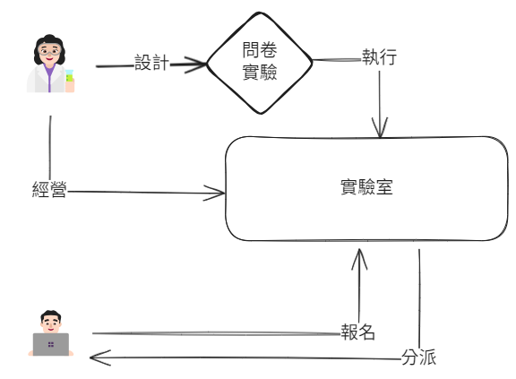
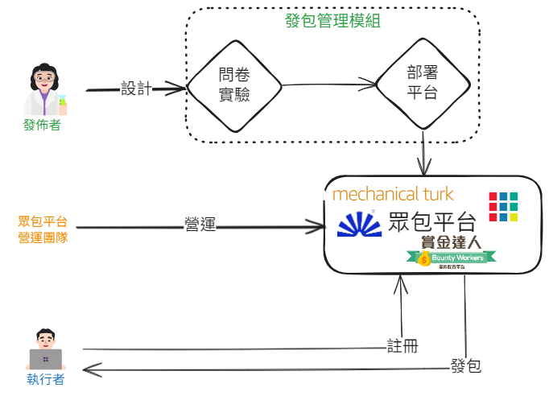
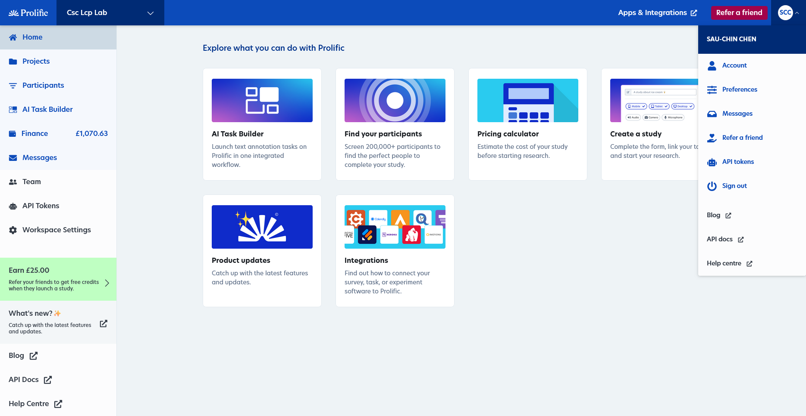
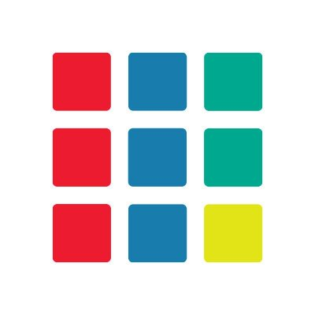
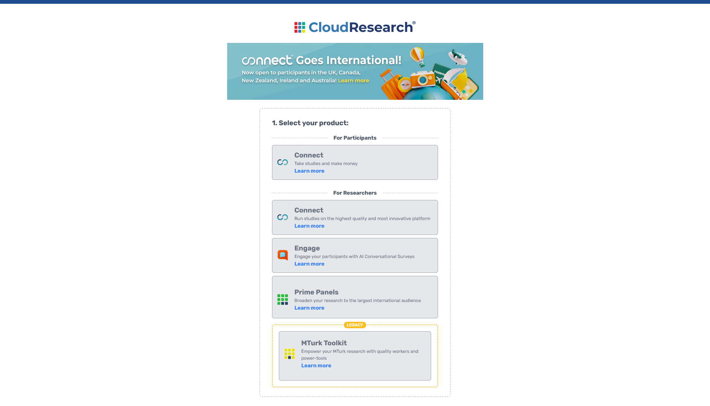

<!DOCTYPE html>
<html lang="en">
<head>
    <meta charset="utf-8" />
    <meta name="viewport" content="width=device-width, initial-scale=1.0, maximum-scale=1.0, user-scalable=no" />

    <title>Introduction to manage your studies on crowdsourcing platforms</title>
    <link rel="stylesheet" href="dist/reset.css">
    <link rel="stylesheet" href="dist/reveal.css" />
    <link rel="stylesheet" href="css/slides-extended.css" />
    <link rel="stylesheet" href="dist\theme\mattropolis.css" id="theme" />
    <link rel="stylesheet" href="plugin\highlight\zenburn.css" />
    <link rel="stylesheet" href="plugin/customcontrols/style.css">


    <script defer src="dist/fontawesome/all.min.js"></script>
    <script defer src="plugin/load-mathjax.js"></script>

    <script type="text/javascript">
        function pageInIframe() {
            return (window.location !== window.parent.location);
        }

        let forgetPop = true;
        function onPopState(event) {
            if(forgetPop){
                forgetPop = false;
            } else if( pageInIframe()) {
                parent.postMessage(event.target.location.href, "app://obsidian.md");
            }
        }
        window.onpopstate = onPopState;
        window.onmessage = event => {
            if(event.data == "reload"){
                window.document.location.reload();
            }
            forgetPop = true;
        }

        function fitElements() {
            const itemsToFit = document.getElementsByClassName('fitText');
            for (const item in itemsToFit) {
                if (Object.hasOwnProperty.call(itemsToFit, item)) {
                    const element = itemsToFit[item];
                    fitElement(element, 1, 1000);
                    element.classList.remove('fitText');
                }
            }
        }

        function fitElement(element, start, end) {

            let size = (end + start) / 2;
            element.style.fontSize = `${size}px`;

            if (Math.abs(start - end) < 1) {
                while (element.scrollHeight > element.offsetHeight) {
                    size--;
                    element.style.fontSize = `${size}px`;
                }
                return;
            }

            if (element.scrollHeight > element.offsetHeight) {
                fitElement(element, start, size);
            } else {
                fitElement(element, size, end);
            }
        }

        document.onreadystatechange = () => {
            fitElements();
            if (document.readyState === 'complete') {
                if (pageInIframe() && window.location.href.indexOf("?export") != -1){
                    parent.postMessage(event.target.location.href, "app://obsidian.md");
                }
                if (window.location.href.indexOf("print-pdf") != -1){
                    let stateCheck = setInterval(() => {
                        clearInterval(stateCheck);
                        window.print();
                    }, 250);
                }
            }
        };
    </script>
</head>

<body>
    <div class="reveal">
        <div class="slides"><section  data-markdown><script type="text/template"><!-- .slide: class="drop" template="" -->
<div class="" style="position: absolute; left: 0px; top: 0px; height: 700px; width: 960px; min-height: 700px; display: flex; flex-direction: column; align-items: center; justify-content: center" absolute="true">

## 線上行為實驗設計及任務部署工作坊

陳紹慶

慈濟大學人類發展與心理學系
</div></script></section><section  data-markdown><script type="text/template"><!-- .slide: class="drop" template="" -->
<div class="" style="position: absolute; left: 0px; top: 0px; height: 700px; width: 960px; min-height: 700px; display: flex; flex-direction: column; align-items: center; justify-content: center" absolute="true">

## 本日流程

| 主題           | 摘要                      | 預計時間     |
| ------------ | ----------------------- | -------- |
| Introduction | 探討**眾包平台框架**與**發包管理模組** | 90~120分鐘 |
| Practices    | **發包管理模組**專案實作, AI輔助編程  | 180分鐘    |
</div></script></section><section  data-markdown><script type="text/template"><!-- .slide: class="drop" template="" -->
<div class="" style="position: absolute; left: 0px; top: 0px; height: 700px; width: 960px; min-height: 700px; display: flex; flex-direction: column; align-items: center; justify-content: center" absolute="true">

## Introduction
</div></script></section><section  data-markdown><script type="text/template"><!-- .slide: class="drop" template="" -->
<div class="" style="position: absolute; left: 0px; top: 0px; height: 700px; width: 960px; min-height: 700px; display: flex; flex-direction: column; align-items: center; justify-content: center" absolute="true">

<div class="callout callout-color-default" data-type="NOTE">
<div class="callout-title">
<div class="callout-icon">
<i class="fas fa-pencil-alt" ></i>

</div>
<div class="callout-title-inner">
In-site Lab 
</div>
</div>
<div class="callout-content">


</div>
</div>
</div></script></section><section  data-markdown><script type="text/template"><!-- .slide: class="drop" template="" -->
<div class="" style="position: absolute; left: 0px; top: 0px; height: 700px; width: 960px; min-height: 700px; display: flex; flex-direction: column; align-items: center; justify-content: center" absolute="true">

<div class="callout callout-color-default" data-type="NOTE">
<div class="callout-title">
<div class="callout-icon">
<i class="fas fa-pencil-alt" ></i>

</div>
<div class="callout-title-inner">
Remote Crowdsourcing Framework> 
</div>
</div>
<div class="callout-content">


</div>
</div>
</div></script></section><section  data-markdown><script type="text/template"><!-- .slide: class="drop" template="" -->
<div class="" style="position: absolute; left: 0px; top: 0px; height: 700px; width: 960px; min-height: 700px; display: flex; flex-direction: column; align-items: center; justify-content: center" absolute="true">

### 發包管理模組
</div></script></section><section  data-markdown><script type="text/template"><!-- .slide: class="drop" template="" -->
<div class="" style="position: absolute; left: 0px; top: 0px; height: 700px; width: 960px; min-height: 700px; display: flex; flex-direction: column; align-items: center; justify-content: center" absolute="true">

#### 遠端部署模式

- 設計完成的腳本同步至部署平台
- Experimental software extension
- Many software supporters
</div></script></section><section  data-markdown><script type="text/template"><!-- .slide: class="drop" template="" -->
<div class="" style="position: absolute; left: 0px; top: 0px; height: 700px; width: 960px; min-height: 700px; display: flex; flex-direction: column; align-items: center; justify-content: center" absolute="true">

#### Experimental software extension

- [Pavlovia.org](https://pavlovia.org/) (for [psychopy](https://www.psychopy.org/))
- [E-prime go](https://pstnet.com/eprime-go/) (for [E-prime 3](https://pstnet.com/products/e-prime/#product-tab-3))
- [Inquist Web](https://www.millisecond.com/products/web/academic)
</div></script></section><section  data-markdown><script type="text/template"><!-- .slide: class="drop" template="" -->
<div class="" style="position: absolute; left: 0px; top: 0px; height: 700px; width: 960px; min-height: 700px; display: flex; flex-direction: column; align-items: center; justify-content: center" absolute="true">

#### Many software supporters

- [JATOS](https://www.jatos.org/) (for Javascript-based scripts) 
- [psiTurk](https://psiturk.org/) (for python-based scripts)
</div></script></section><section  data-markdown><script type="text/template"><!-- .slide: class="drop" template="" -->
<div class="" style="position: absolute; left: 0px; top: 0px; height: 700px; width: 960px; min-height: 700px; display: flex; flex-direction: column; align-items: center; justify-content: center" absolute="true">

#### 統包模式

- 使用單一平台設計腳本及部署腳本
- Multiple purposes
- Specific purpose
</div></script></section><section  data-markdown><script type="text/template"><!-- .slide: class="drop" template="" -->
<div class="" style="position: absolute; left: 0px; top: 0px; height: 700px; width: 960px; min-height: 700px; display: flex; flex-direction: column; align-items: center; justify-content: center" absolute="true">

#### Products for multiple purposes 

- [psytoolkit](https://www.psytoolkit.org/)
- [Gorilla](https://gorilla.sc/)
</div></script></section><section  data-markdown><script type="text/template"><!-- .slide: class="drop" template="" -->
<div class="" style="position: absolute; left: 0px; top: 0px; height: 700px; width: 960px; min-height: 700px; display: flex; flex-direction: column; align-items: center; justify-content: center" absolute="true">

#### Products for specific purpose 

- [Project Implicit](https://www.projectimplicit.net/)
- [LHQ 3](https://lhq-blclab.org/)
</div></script></section><section  data-markdown><script type="text/template"><!-- .slide: class="drop" template="" -->
<div class="" style="position: absolute; left: 0px; top: 0px; height: 700px; width: 960px; min-height: 700px; display: flex; flex-direction: column; align-items: center; justify-content: center" absolute="true">

### 今日實作學習目標

支援多種設計平台的「遠端部署模式」
</div></script></section><section  data-markdown><script type="text/template"><!-- .slide: class="drop" template="" -->
<div class="" style="position: absolute; left: 0px; top: 0px; height: 700px; width: 960px; min-height: 700px; display: flex; flex-direction: column; align-items: center; justify-content: center" absolute="true">

### 眾包平台
</div></script></section><section  data-markdown><script type="text/template"><!-- .slide: class="drop" template="" -->
<div class="" style="position: absolute; left: 0px; top: 0px; height: 700px; width: 960px; min-height: 700px; display: flex; flex-direction: column; align-items: center; justify-content: center" absolute="true">

#### 多元協作需求 ~ [Amazon MTurk](https://www.mturk.com/)


</div></script></section><section  data-markdown><script type="text/template"><!-- .slide: class="drop" template="" -->
<div class="" style="position: absolute; left: 0px; top: 0px; height: 700px; width: 960px; min-height: 700px; display: flex; flex-direction: column; align-items: center; justify-content: center" absolute="true">

#### 使用者角色

- 發佈者(Requesters)
- 工作者(Workers/Turkers) - 研究參與者、產品試用者、市調受訪者
</div></script></section><section  data-markdown><script type="text/template"><!-- .slide: class="drop" template="" -->
<div class="" style="position: absolute; left: 0px; top: 0px; height: 700px; width: 960px; min-height: 700px; display: flex; flex-direction: column; align-items: center; justify-content: center" absolute="true">

##### 發佈者客群：主要使用者

- **學術研究人員**
  - 橫跨心理學、社會學、醫學、電腦科學、語言學等多個領域。
  - 目標是快速、低成本地收集大規模實驗數據。

- **企業工程師與數據科學家**
  - 處理電腦難以自動化的任務，例如：
    - 圖像辨識與標註
    - 數據驗證與清理
    - 模型訓練內容
</div></script></section><section  data-markdown><script type="text/template"><!-- .slide: class="drop" template="" -->
<div class="" style="position: absolute; left: 0px; top: 0px; height: 700px; width: 960px; min-height: 700px; display: flex; flex-direction: column; align-items: center; justify-content: center" absolute="true">

##### 經典案例：[ImageNet](https://www.image-net.org/)


</div></script></section><section  data-markdown><script type="text/template"><!-- .slide: class="drop" template="" -->
<div class="" style="position: absolute; left: 0px; top: 0px; height: 700px; width: 960px; min-height: 700px; display: flex; flex-direction: column; align-items: center; justify-content: center" absolute="true">

##### 發佈者客群：核心目標

- **加速與規模化 (Accelerated and Scalable)**
  - 快速招募大量且多元的參與者，取代傳統受限的樣本來源（如大學生）。
- **成本效益 (Cost-Effectiveness)**
  - 以相對較低的成本完成大量且高度重複的微任務（micro-tasks）。
- **突破AI限制**
  - 借助「工人智慧（Artificial Artificial Intelligence）」解決單一機器無法獨立完成的複雜任務。
</div></script></section><section  data-markdown><script type="text/template"><!-- .slide: class="drop" template="" -->
<div class="" style="position: absolute; left: 0px; top: 0px; height: 700px; width: 960px; min-height: 700px; display: flex; flex-direction: column; align-items: center; justify-content: center" absolute="true">

### 引發的課題

當協作規模化後，我們面臨哪些新的挑戰？
</div></script></section><section  data-markdown><script type="text/template"><!-- .slide: class="drop" template="" -->
<div class="" style="position: absolute; left: 0px; top: 0px; height: 700px; width: 960px; min-height: 700px; display: flex; flex-direction: column; align-items: center; justify-content: center" absolute="true">

#### 課題一：數據品質與方法論

- **數據品質的挑戰**
  - 參與者可能因動機、注意力或對任務理解不足，而影響數據可靠性。
- **樣本的代表性**
  - 雖然樣本比傳統方式更多元，但仍可能無法完全代表真實世界的人口結構。
- **方法論的穩健性**
  - 需要發展更健全的品質控制機制（如注意力檢查、篩選標準）來確保研究品質。
</div></script></section><section  data-markdown><script type="text/template"><!-- .slide: class="drop" template="" -->
<div class="" style="position: absolute; left: 0px; top: 0px; height: 700px; width: 960px; min-height: 700px; display: flex; flex-direction: column; align-items: center; justify-content: center" absolute="true">

#### 課題二：勞動倫理與權力關係

- **勞工權益問題**
  - 工作者（Turkers）常面臨低工資、缺乏社會保障、工作不穩定的困境。
- **權力不對等**
  - 發佈者（Requesters）擁有拒絕任務、影響工作者評價的權力，但缺乏有效的申訴管道。
- **隱形的勞動**
  - 數位勞動的過程與價值常被低估或忽視，形成一種「隱形工廠」。
</div></script></section><section  data-markdown><script type="text/template"><!-- .slide: class="drop" template="" -->
<div class="" style="position: absolute; left: 0px; top: 0px; height: 700px; width: 960px; min-height: 700px; display: flex; flex-direction: column; align-items: center; justify-content: center" absolute="true">

#### 課題三：倫理與實務考量

- **隱私風險**
  - 任務可能要求分享個人資訊，但缺乏足夠的隱私保護措施。
- **集體訴求的困難**
  - 由於工作者的分散性與競爭性，難以組織集體行動來爭取更好的勞動條件。
- **道德標準難以確立**
  - 平台治理、研究倫理與勞動法規三者之間存在巨大的模糊地帶。
</div></script></section><section  data-markdown><script type="text/template"><!-- .slide: class="drop" template="" -->
<div class="" style="position: absolute; left: 0px; top: 0px; height: 700px; width: 960px; min-height: 700px; display: flex; flex-direction: column; align-items: center; justify-content: center" absolute="true">

#### 人類數據引擎 ~ [Prolific](https://www.prolific.com/)


</div></script></section><section  data-markdown><script type="text/template"><!-- .slide: class="drop" template="" -->
<div class="" style="position: absolute; left: 0px; top: 0px; height: 700px; width: 960px; min-height: 700px; display: flex; flex-direction: column; align-items: center; justify-content: center" absolute="true">

##### 核心理念：追求卓越品質的「道德回報」

- **共同成功 (We win together)**
  - 核心原則：研究者的成功與參與者的福祉密不可分。
  - 參與者素質：實施嚴格的參與者驗證流程（即時錄影再經後台驗證），不追求擴大來源而犧牲品質。
  - 研究者責任：強制公平報酬（最低時薪 £6.00 / $8.00），營造尊重與信任的社群文化。
</div></script></section><section  data-markdown><script type="text/template"><!-- .slide: class="drop" template="" -->
<div class="" style="position: absolute; left: 0px; top: 0px; height: 700px; width: 960px; min-height: 700px; display: flex; flex-direction: column; align-items: center; justify-content: center" absolute="true">

##### 目標客群與市場定位

- **[主要客群](https://app.prolific.com/)**
  - **學術研究人員**：重視數據信度和研究倫理。
  - **AI 開發者**：需要高品質、經審核的人類回饋來進行模型訓練、對齊與安全評估。
- **市場策略**
  - **學術界**：透過折扣費率吸引學術界，以發表於頂級期刊論文的數量彰顯平台品質。
  - **AI 領域**：定位自身為建構下一代 AI 不可或缺的「頂級人類數據供應商」。
</div></script></section><section  data-markdown><script type="text/template"><!-- .slide: class="drop" template="" -->
<div class="" style="position: absolute; left: 0px; top: 0px; height: 700px; width: 960px; min-height: 700px; display: flex; flex-direction: column; align-items: center; justify-content: center" absolute="true">

##### 研究者帳號介面


</div></script></section><section  data-markdown><script type="text/template"><!-- .slide: class="drop" template="" -->
<div class="" style="position: absolute; left: 0px; top: 0px; height: 700px; width: 960px; min-height: 700px; display: flex; flex-direction: column; align-items: center; justify-content: center" absolute="true">

##### 產品與服務模式

- **單一、聚焦的平台**
  - 提供統一、流線型的使用者界面，專注於做好「受試者招募」。
  - 可透過 API 或直接連結串接 Qualtrics, Gorilla, Typeform 等主流發包管理模組。
- **高品質的自有參與者庫**
  - 維護經過嚴格審核、非外包的自有參與者庫，確保數據來源的純粹性與可靠性。
  - 提供超過 300 種免費篩選器，並建立代表性參與者庫。
</div></script></section><section  data-markdown><script type="text/template"><!-- .slide: class="drop" template="" -->
<div class="" style="position: absolute; left: 0px; top: 0px; height: 700px; width: 960px; min-height: 700px; display: flex; flex-direction: column; align-items: center; justify-content: center" absolute="true">

#### 研究友善平台 ~ [CloudResearch](https://www.cloudresearch.com/)


</div></script></section><section  data-markdown><script type="text/template"><!-- .slide: class="drop" template="" -->
<div class="" style="position: absolute; left: 0px; top: 0px; height: 700px; width: 960px; min-height: 700px; display: flex; flex-direction: column; align-items: center; justify-content: center" absolute="true">

##### 核心理念：「源於研究者，服務研究者」

- 有學術研究背景的 **[Leib Litman](https://www.linkedin.com/in/leib-litman-phd-373b7a130/)** 與 **Jonathan Robinson** 共同創立。
- 深刻理解研究者在數據收集過程中面臨的**恐懼**(資料欺詐)與**挑戰**(機器人參與)，將自身定位為「數據品質的守護者」。
- 核心技術 **Sentry™**：數據品質驗證系統，在參與者進入研究前進行多層次審核，作為保證資料品質的技術基石。
</div></script></section><section  data-markdown><script type="text/template"><!-- .slide: class="drop" template="" -->
<div class="" style="position: absolute; left: 0px; top: 0px; height: 700px; width: 960px; min-height: 700px; display: flex; flex-direction: column; align-items: center; justify-content: center" absolute="true">

##### 產品生態系：多管齊下的「客戶旅程漏斗」

- **MTurk Toolkit (獲客入口)**: Amazon MTurk 的增強平台，解決資料品質與費用過高的痛點，吸引大量現有 MTurk 用戶進入產品生態系。
- **Connect (核心平台)**: 自有的高品質參與者平台，定位為 Prolific 的直接競爭對手。以有市場競爭力的學術費率吸引用戶。
- **Prime Panels (跨國參與者平台)**: 聚合全球超過 1 億名參與者，滿足大規模、國際性或需要特定小眾樣本的研究需求。 目前只有提供主流發包管理模組(Qualtrics)串接服務，串接自訂模組需要接洽客服。
</div></script></section><section  data-markdown><script type="text/template"><!-- .slide: class="drop" template="" -->
<div class="" style="position: absolute; left: 0px; top: 0px; height: 700px; width: 960px; min-height: 700px; display: flex; flex-direction: column; align-items: center; justify-content: center" absolute="true">

#### 產品入口


</div></script></section><section  data-markdown><script type="text/template"><!-- .slide: class="drop" template="" -->
<div class="" style="position: absolute; left: 0px; top: 0px; height: 700px; width: 960px; min-height: 700px; display: flex; flex-direction: column; align-items: center; justify-content: center" absolute="true">

##### 市場策略：全面覆蓋學術界到企業需求
- **學術市場為根基**
  - 透過為學術界量身打造的產品（Connect, MTurk Toolkit）和具吸引力的定價，吸引處於職業生涯早期的研究者。
- **企業市場為增長點**
  - 長期使用產品的學術人才轉換跑道進入業界，有潛力成為企業的內部擁護者。
  - 透過 Prime Panels 和 Managed Research（顧問式服務）滿足高預算、高複雜度的企業級需求。
</div></script></section><section  data-markdown><script type="text/template"><!-- .slide: class="drop" template="" -->
<div class="" style="position: absolute; left: 0px; top: 0px; height: 700px; width: 960px; min-height: 700px; display: flex; flex-direction: column; align-items: center; justify-content: center" absolute="true">

#### 商業市場調查 ~ Qualtrics Panels


</div></script></section><section  data-markdown><script type="text/template"><!-- .slide: class="drop" template="" -->
<div class="" style="position: absolute; left: 0px; top: 0px; height: 700px; width: 960px; min-height: 700px; display: flex; flex-direction: column; align-items: center; justify-content: center" absolute="true">

##### 統包的力量
- **無縫整合的產品生態**
  - 核心業務是典型發包管理模組。Panels 服務是XM產品系列的新成員。
  - 已經深度使用 Qualtrics 的企業和大學，使用Panels是最方便、摩擦最小的選擇。
- **從數據到行動的閉環**
  - Panels 收集的經驗數據（X-Data）能深度整合 CRM、ERP 的營運數據（O-Data）。
  - 自動化 Workflows實現從「洞察」到「行動」的完整閉環（例：一個客戶差評可以即時在 CRM 生成一項跟進工單）。
</div></script></section><section  data-markdown><script type="text/template"><!-- .slide: class="drop" template="" -->
<div class="" style="position: absolute; left: 0px; top: 0px; height: 700px; width: 960px; min-height: 700px; display: flex; flex-direction: column; align-items: center; justify-content: center" absolute="true">


</div></script></section><section  data-markdown><script type="text/template"><!-- .slide: class="drop" template="" -->
<div class="" style="position: absolute; left: 0px; top: 0px; height: 700px; width: 960px; min-height: 700px; display: flex; flex-direction: column; align-items: center; justify-content: center" absolute="true">


</div></script></section><section  data-markdown><script type="text/template"><!-- .slide: class="drop" template="" -->
<div class="" style="position: absolute; left: 0px; top: 0px; height: 700px; width: 960px; min-height: 700px; display: flex; flex-direction: column; align-items: center; justify-content: center" absolute="true">

##### 服務模式與目標客群
- **雙重模式**
  - **全球在線樣本 (Online Sample)** ：XM全球樣本庫有高度樣本一致性，適合追蹤研究。
  - **自有樣本管理 (Proprietary Panel)** ：企業可自行管理客戶或員工樣本庫，以更低成本執行研究。
- **主要目標客群**
  - **大型企業客戶** ：需要一站式解決方案，要將市場研究嵌入核心業務流程的組織。
  - **有完整授權的學術機構**：師生使用XM內建的招募選項是「預設路徑」。
</div></script></section><section  data-markdown><script type="text/template"><!-- .slide: class="drop" template="" -->
<div class="" style="position: absolute; left: 0px; top: 0px; height: 700px; width: 960px; min-height: 700px; display: flex; flex-direction: column; align-items: center; justify-content: center" absolute="true">

##### 品質與成本的權衡
- **品質**
  - 提供 ExpertReview 等工具進行數據清理，但主要依賴後端調節（Reconciliation），且有最少樣本數量的啟動門檻。
- **成本**
  - 根據第三方學術研究（[Douglas et al., 2023](https://journals.plos.org/plosone/article?id=10.1371/journal.pone.0279720)），「每位高品質受試者的成本」顯著高於 Prolific 和 CloudResearch。
  - 平台價值不在於成本效益，而是強大的 XM 平台的整合便利性。
</div></script></section><section  data-markdown><script type="text/template"><!-- .slide: class="drop" template="" -->
<div class="" style="position: absolute; left: 0px; top: 0px; height: 700px; width: 960px; min-height: 700px; display: flex; flex-direction: column; align-items: center; justify-content: center" absolute="true">

##### 這些眾包平台的資料來源是什麼樣的人類樣本？
</div></script></section><section  data-markdown><script type="text/template"><!-- .slide: class="drop" template="" -->
<div class="" style="position: absolute; left: 0px; top: 0px; height: 700px; width: 960px; min-height: 700px; display: flex; flex-direction: column; align-items: center; justify-content: center" absolute="true">

##### 你的計畫目標通常接觸什麼樣的人類樣本？

##### 你如何接觸目標樣本？
</div></script></section><section  data-markdown><script type="text/template"><!-- .slide: class="drop" template="" -->
<div class="" style="position: absolute; left: 0px; top: 0px; height: 700px; width: 960px; min-height: 700px; display: flex; flex-direction: column; align-items: center; justify-content: center" absolute="true">

### 在地樣本源 ~ [Bounty Workers](https://www.bountyworkers.net/)


</div></script></section><section  data-markdown><script type="text/template"><!-- .slide: class="drop" template="" -->
<div class="" style="position: absolute; left: 0px; top: 0px; height: 700px; width: 960px; min-height: 700px; display: flex; flex-direction: column; align-items: center; justify-content: center" absolute="true">

#### 什麼是BountyWorkers？

<iframe width="720" height="480" src="https://www.youtube.com/embed/FxXPbKFkCgU?si=gurN_a_ZTcSLhX9e" title="YouTube video player" frameborder="0" allow="accelerometer; autoplay; clipboard-write; encrypted-media; gyroscope; picture-in-picture; web-share" referrerpolicy="strict-origin-when-cross-origin" allowfullscreen></iframe>
</div></script></section><section  data-markdown><script type="text/template"><!-- .slide: class="drop" template="" -->
<div class="" style="position: absolute; left: 0px; top: 0px; height: 700px; width: 960px; min-height: 700px; display: flex; flex-direction: column; align-items: center; justify-content: center" absolute="true">

#### BountyWorkers如何支援學術研究

<iframe width="720" height="480" src="https://www.youtube.com/embed/R35UgkP_ysw?si=nP7iVHYh7Yx0TO7f" title="YouTube video player" frameborder="0" allow="accelerometer; autoplay; clipboard-write; encrypted-media; gyroscope; picture-in-picture; web-share" referrerpolicy="strict-origin-when-cross-origin" allowfullscreen></iframe>
</div></script></section><section  data-markdown><script type="text/template"><!-- .slide: class="drop" template="" -->
<div class="" style="position: absolute; left: 0px; top: 0px; height: 700px; width: 960px; min-height: 700px; display: flex; flex-direction: column; align-items: center; justify-content: center" absolute="true">

#### BountyWorkers如何保障資料品質
#### BountyWorkers的合作績效
</div></script></section><section  data-markdown><script type="text/template"><!-- .slide: class="drop" template="" -->
<div class="" style="position: absolute; left: 0px; top: 0px; height: 700px; width: 960px; min-height: 700px; display: flex; flex-direction: column; align-items: center; justify-content: center" absolute="true">

#### 開始實作之前

- 下載[專案模組](https://github.com/SCgeeker/Scripts_Factory)，了解準備項目

- 建議加入[發佈者專屬社團](https://www.facebook.com/groups/bwdistributors/)
</div></script></section><section  data-markdown><script type="text/template"><!-- .slide: class="drop" template="" -->
<div class="" style="position: absolute; left: 0px; top: 0px; height: 700px; width: 960px; min-height: 700px; display: flex; flex-direction: column; align-items: center; justify-content: center" absolute="true">

### 實作專案簡介

[Scripts_Factory](https://github.com/SCgeeker/Scripts_Factory): 線上實驗腳本工廠

- OpenSesame 實驗腳本模板庫
- JATOS 部署就緒的範例腳本
- 從基礎到進階的學習路徑
</div></script></section><section  data-markdown><script type="text/template"><!-- .slide: class="drop" template="" -->
<div class="" style="position: absolute; left: 0px; top: 0px; height: 700px; width: 960px; min-height: 700px; display: flex; flex-direction: column; align-items: center; justify-content: center" absolute="true">

### 今日實作目標

1. **認識工具鏈**: OpenSesame → JATOS 工作流程
2. **模板學習**: 從簡單模板理解腳本結構
3. **實際部署**: 完成線上實驗發佈
4. **進階挑戰**: 完成 WCST 腳本部署
</div></script></section><section  data-markdown><script type="text/template"><!-- .slide: class="drop" template="" -->
<div class="" style="position: absolute; left: 0px; top: 0px; height: 700px; width: 960px; min-height: 700px; display: flex; flex-direction: column; align-items: center; justify-content: center" absolute="true">

## 開始之前：環境設定
</div></script></section><section  data-markdown><script type="text/template"><!-- .slide: class="drop" template="" -->
<div class="" style="position: absolute; left: 0px; top: 0px; height: 700px; width: 960px; min-height: 700px; display: flex; flex-direction: column; align-items: center; justify-content: center" absolute="true">

### 選擇你的工作模式

| 場景  | 工具組合                         | 適合對象                   |
| --- | ---------------------------- | ---------------------- |
| A   | OpenSesame + 手動編輯            | 熟悉實驗設計但不常寫程式           |
| B   | OpenSesame + AI 協作           | 想學習 AI 輔助編程            |
| C   | RStudio + OpenSesame         | 熟悉 R 語言，想整合實驗設計與資料分析流程 |
| D   | RStudio + OpenSesame + AI 協作 | 進階使用者，追求完整自動化工作流程      |
</div></script></section><section  data-markdown><script type="text/template"><!-- .slide: class="drop" template="" -->
<div class="" style="position: absolute; left: 0px; top: 0px; height: 700px; width: 960px; min-height: 700px; display: flex; flex-direction: column; align-items: center; justify-content: center" absolute="true">

### 場景 A: OpenSesame + 手動編輯

**工具需求**:
- [OpenSesame 4.1+](https://osdoc.cogsci.nl/)
- OSWeb 插件 (已內建)
- JATOS 帳號 (Cortex / mindprobe / 本地測試)

**優勢**:
- 視覺化界面，即見即所得
- OpenSesame 4+ 一鍵同步到 JATOS
- 適合快速原型設計
</div></script></section><section  data-markdown><script type="text/template"><!-- .slide: class="drop" template="" -->
<div class="" style="position: absolute; left: 0px; top: 0px; height: 700px; width: 960px; min-height: 700px; display: flex; flex-direction: column; align-items: center; justify-content: center" absolute="true">

### 場景 B: OpenSesame + AI 協作

**工具需求**:
- [OpenSesame 4.1+](https://osdoc.cogsci.nl/)
- Claude Code / Gemini CLI
- JATOS 帳號

**優勢**:
- AI 幫助理解 `.osexp` XML 結構
- 快速除錯與參數優化
- 學習實驗腳本設計最佳實踐
</div></script></section><section  data-markdown><script type="text/template"><!-- .slide: class="drop" template="" -->
<div class="" style="position: absolute; left: 0px; top: 0px; height: 700px; width: 960px; min-height: 700px; display: flex; flex-direction: column; align-items: center; justify-content: center" absolute="true">

### 場景 C: RStudio + OpenSesame

**工具需求**:
- [RStudio](https://posit.co/download/rstudio-desktop/)
- [OpenSesame 4.1+](https://osdoc.cogsci.nl/)
- R 套件: `xml2`, `httr` (用於 JATOS API)

**優勢**:
- 整合 R 工作流程，從實驗設計到資料分析
- 批次修改實驗參數
- 適合需要大量參數變化的實驗設計
</div></script></section><section  data-markdown><script type="text/template"><!-- .slide: class="drop" template="" -->
<div class="" style="position: absolute; left: 0px; top: 0px; height: 700px; width: 960px; min-height: 700px; display: flex; flex-direction: column; align-items: center; justify-content: center" absolute="true">

### 場景 D: RStudio + OpenSesame + AI 協作

**工具需求**:
- [RStudio](https://posit.co/download/rstudio-desktop/)
- [OpenSesame 4.1+](https://osdoc.cogsci.nl/)
- Claude Code / Gemini CLI
- R 套件: `xml2`, `httr`

**優勢**:
- 完整自動化：從腳本生成、AI 審核、到部署
- 可重現研究流程 (reproducible workflow)
- 適合複雜實驗設計與多實驗批次管理
</div></script></section><section  data-markdown><script type="text/template"><!-- .slide: class="drop" template="" -->
<div class="" style="position: absolute; left: 0px; top: 0px; height: 700px; width: 960px; min-height: 700px; display: flex; flex-direction: column; align-items: center; justify-content: center" absolute="true">

## JATOS 部署選項

選擇適合你的 JATOS 環境
</div></script></section><section  data-markdown><script type="text/template"><!-- .slide: class="drop" template="" -->
<div class="" style="position: absolute; left: 0px; top: 0px; height: 700px; width: 960px; min-height: 700px; display: flex; flex-direction: column; align-items: center; justify-content: center" absolute="true">

### 三種 JATOS 使用方式

| 方式       | 適用情境          | 網址                                                | 特點         |
| -------- | ------------- | ------------------------------------------------- | ---------- |
| Cortex   | 快速測試、學習      | [cortex.jatos.org](https://cortex.jatos.org)      | 官方試用伺服器    |
| mindprobe | 正式研究、穩定服務   | [mindprobe.eu](https://www.mindprobe.eu/)         | 託管式服務平台    |
| 本地端安裝    | 學習伺服器架設、本機測試 | [安裝指南](https://www.jatos.org/Installation.html) | 在自己電腦上運行測試 |
</div></script></section><section  data-markdown><script type="text/template"><!-- .slide: class="drop" template="" -->
<div class="" style="position: absolute; left: 0px; top: 0px; height: 700px; width: 960px; min-height: 700px; display: flex; flex-direction: column; align-items: center; justify-content: center" absolute="true">

### Cortex: JATOS 官方試用伺服器

**特色**:
- 完全免費，註冊即可使用
- 適合快速測試與學習
- 體驗完整 JATOS 功能

**限制**:
- 研究數量與資料保留期限有限制
- 不適合長期正式研究

**註冊**: [cortex.jatos.org](https://cortex.jatos.org)
</div></script></section><section  data-markdown><script type="text/template"><!-- .slide: class="drop" template="" -->
<div class="" style="position: absolute; left: 0px; top: 0px; height: 700px; width: 960px; min-height: 700px; display: flex; flex-direction: column; align-items: center; justify-content: center" absolute="true">

### mindprobe: 託管式研究平台

**特色**:
- 專業託管服務
- 穩定可靠，適合正式研究
- 符合歐洲資料保護規範 (GDPR)

**使用方式**:
- 訪問 [mindprobe.eu](https://www.mindprobe.eu/) 了解服務詳情
- 提供註冊與技術支援
</div></script></section><section  data-markdown><script type="text/template"><!-- .slide: class="drop" template="" -->
<div class="" style="position: absolute; left: 0px; top: 0px; height: 700px; width: 960px; min-height: 700px; display: flex; flex-direction: column; align-items: center; justify-content: center" absolute="true">

### 本地端 JATOS: 在自己電腦上測試

**適合對象**:
- 想學習如何架設網頁應用的參與者
- 需要在本機測試實驗流程
- 想了解 JATOS 伺服器運作原理

**安裝步驟**:
1. 下載 JATOS ([jatos.org](https://www.jatos.org/Installation.html))
2. 解壓縮並執行啟動腳本
3. 瀏覽器開啟 `http://localhost:9000`
4. 即可在本機測試實驗

**系統需求**: Windows / macOS / Linux + Java 11+
</div></script></section><section  data-markdown><script type="text/template"><!-- .slide: class="drop" template="" -->
<div class="" style="position: absolute; left: 0px; top: 0px; height: 700px; width: 960px; min-height: 700px; display: flex; flex-direction: column; align-items: center; justify-content: center" absolute="true">

### 今日工作坊使用建議

**推薦選擇**:

- **初次接觸**: 使用 **Cortex** (最簡單)
- **想學習完整流程**: 嘗試 **本地端安裝** (可回家繼續練習)
- **已有正式研究計畫**: 考慮 **mindprobe**

**今日目標**: 至少完成一種方式的部署測試
</div></script></section><section  data-markdown><script type="text/template"><!-- .slide: class="drop" template="" -->
<div class="" style="position: absolute; left: 0px; top: 0px; height: 700px; width: 960px; min-height: 700px; display: flex; flex-direction: column; align-items: center; justify-content: center" absolute="true">

## 第一步：Consent 模板

從最簡單的知情同意書開始
</div></script></section><section  data-markdown><script type="text/template"><!-- .slide: class="drop" template="" -->
<div class="" style="position: absolute; left: 0px; top: 0px; height: 700px; width: 960px; min-height: 700px; display: flex; flex-direction: column; align-items: center; justify-content: center" absolute="true">

### Consent 模板功能

- 顯示研究說明文字
- 提供同意/不同意選項
- 記錄參與者決定
- 不同意者自動結束實驗

**檔案位置**: `1_Templates/Consent/`
</div></script></section><section  data-markdown><script type="text/template"><!-- .slide: class="drop" template="" -->
<div class="" style="position: absolute; left: 0px; top: 0px; height: 700px; width: 960px; min-height: 700px; display: flex; flex-direction: column; align-items: center; justify-content: center" absolute="true">

### OpenSesame 腳本基本結構

```
實驗設定(experiment.component)
├── 主序列 (main sequence)
│   ├── consent_form (知情同意書)
│   └── instructions (說明畫面) 
└── 腳本序列(script sequence) 
    ├──  視覺呈現元素(sketchpad/form items)
    └── end_screen (結束畫面)
```
</div></script></section><section  data-markdown><script type="text/template"><!-- .slide: class="drop" template="" -->
<div class="" style="position: absolute; left: 0px; top: 0px; height: 700px; width: 960px; min-height: 700px; display: flex; flex-direction: column; align-items: center; justify-content: center" absolute="true">

### 動手做：檢視 Consent 模板

1. 用 OpenSesame 開啟 `Consent/consent.osexp`
2. 觀察實驗流程結構 (左側面板)
3. 檢視 form_consent 項目設定
4. 了解 sequence 如何控制流程，form 如何收集回應
</div></script></section><section  data-markdown><script type="text/template"><!-- .slide: class="drop" template="" -->
<div class="" style="position: absolute; left: 0px; top: 0px; height: 700px; width: 960px; min-height: 700px; display: flex; flex-direction: column; align-items: center; justify-content: center" absolute="true">

## OpenSesame 4+ 一鍵部署到 JATOS
</div></script></section><section  data-markdown><script type="text/template"><!-- .slide: class="drop" template="" -->
<div class="" style="position: absolute; left: 0px; top: 0px; height: 700px; width: 960px; min-height: 700px; display: flex; flex-direction: column; align-items: center; justify-content: center" absolute="true">

### 傳統流程 vs. OpenSesame 4+ 新功能

**傳統方式** (OpenSesame 3.x):
1. Tools → OSWeb → Export experiment as JATOS study
2. 下載 `.zip` 檔案
3. 登入 JATOS
4. 手動上傳 `.zip`

**OpenSesame 4+ 新方式**:
1. 直接在 OpenSesame 內設定 JATOS 連線
2. 一鍵同步，即時更新
</div></script></section><section  data-markdown><script type="text/template"><!-- .slide: class="drop" template="" -->
<div class="" style="position: absolute; left: 0px; top: 0px; height: 700px; width: 960px; min-height: 700px; display: flex; flex-direction: column; align-items: center; justify-content: center" absolute="true">

### 設定 OpenSesame 4+ 連接 JATOS

**步驟**:

1. **Tools** → **OSWeb** → **JATOS manager**
2. 輸入 JATOS 伺服器資訊:
   - Server URL: `https://cortex.jatos.org` (或其他 JATOS 網址)
   - API Token: 從 JATOS 取得 (User → API Token)
3. **Connect** 連接到 JATOS
4. 選擇要同步的實驗
5. **Sync** 一鍵同步

**參考文件**: [OpenSesame JATOS 設定](https://osdoc.cogsci.nl/4.1/manual/osweb/jatos/)
</div></script></section><section  data-markdown><script type="text/template"><!-- .slide: class="drop" template="" -->
<div class="" style="position: absolute; left: 0px; top: 0px; height: 700px; width: 960px; min-height: 700px; display: flex; flex-direction: column; align-items: center; justify-content: center" absolute="true">

### 取得 JATOS API Token

**在 JATOS 操作**:

1. 登入你的 JATOS 帳號 (Cortex / mindprobe / 本地端)
2. 右上角點選使用者名稱
3. 選擇 **User Manager** 或 **Profile**
4. 找到 **Personal Access Tokens** 或 **API Token**
5. **Generate new token** → 複製 Token
6. 回到 OpenSesame 貼上

**注意**: Token 只顯示一次，請妥善保存
</div></script></section><section  data-markdown><script type="text/template"><!-- .slide: class="drop" template="" -->
<div class="" style="position: absolute; left: 0px; top: 0px; height: 700px; width: 960px; min-height: 700px; display: flex; flex-direction: column; align-items: center; justify-content: center" absolute="true">

## 實作：部署 Consent 到 JATOS
</div></script></section><section  data-markdown><script type="text/template"><!-- .slide: class="drop" template="" -->
<div class="" style="position: absolute; left: 0px; top: 0px; height: 700px; width: 960px; min-height: 700px; display: flex; flex-direction: column; align-items: center; justify-content: center" absolute="true">

### JATOS 是什麼？

**Just Another Tool for Online Studies**

- 開源的線上實驗管理系統
- 管理參與者、分配連結、收集資料
- 支援多種實驗框架 (OSWeb, jsPsych, lab.js 等)
</div></script></section><section  data-markdown><script type="text/template"><!-- .slide: class="drop" template="" -->
<div class="" style="position: absolute; left: 0px; top: 0px; height: 700px; width: 960px; min-height: 700px; display: flex; flex-direction: column; align-items: center; justify-content: center" absolute="true">

### JATOS 核心概念

- **Study** (研究): 一個完整的實驗專案
- **Component** (元件): Study 內的單一任務單元
- **Batch** (批次): 參與者群組管理
- **Worker** (工作者): 參與實驗的受試者
</div></script></section><section  data-markdown><script type="text/template"><!-- .slide: class="drop" template="" -->
<div class="" style="position: absolute; left: 0px; top: 0px; height: 700px; width: 960px; min-height: 700px; display: flex; flex-direction: column; align-items: center; justify-content: center" absolute="true">

### 使用 OpenSesame 4+ 同步 Consent

**實作步驟**:

1. 在 OpenSesame 開啟 `consent.osexp`
2. **Tools** → **OSWeb and JATOS control panel**
3. 連接到你的 JATOS 伺服器 (Configure the server設定url + API Token)
4. 選擇 **Create new study** 或選擇現有 study
5. 點擊 **Save and publish to JATOS** 同步實驗
6. 同步完成後，JATOS 自動建立或更新實驗
</div></script></section><section  data-markdown><script type="text/template"><!-- .slide: class="drop" template="" -->
<div class="" style="position: absolute; left: 0px; top: 0px; height: 700px; width: 960px; min-height: 700px; display: flex; flex-direction: column; align-items: center; justify-content: center" absolute="true">

### 在 JATOS 測試實驗

**步驟**:

1. 登入 JATOS (與 OpenSesame 連接的同一個伺服器)
2. 在 Studies 列表找到剛才同步的實驗
3. 點擊 **Run** → 測試執行
4. 完成實驗流程
5. 返回 JATOS → **Results** 檢查資料
</div></script></section><section  data-markdown><script type="text/template"><!-- .slide: class="drop" template="" -->
<div class="" style="position: absolute; left: 0px; top: 0px; height: 700px; width: 960px; min-height: 700px; display: flex; flex-direction: column; align-items: center; justify-content: center" absolute="true">

### 測試檢查清單

**確認項目**:
- [ ] 實驗正常載入
- [ ] 中文文字顯示正確
- [ ] 同意/不同意按鈕功能正常
- [ ] 完成後資料儲存在 JATOS Results
- [ ] 可以下載資料為 CSV/JSON 格式
</div></script></section><section  data-markdown><script type="text/template"><!-- .slide: class="drop" template="" -->
<div class="" style="position: absolute; left: 0px; top: 0px; height: 700px; width: 960px; min-height: 700px; display: flex; flex-direction: column; align-items: center; justify-content: center" absolute="true">

## 第二步：NfC 量表模板

自訂問卷實驗腳本
</div></script></section><section  data-markdown><script type="text/template"><!-- .slide: class="drop" template="" -->
<div class="" style="position: absolute; left: 0px; top: 0px; height: 700px; width: 960px; min-height: 700px; display: flex; flex-direction: column; align-items: center; justify-content: center" absolute="true">

### NfC (Need for Cognition) 量表

- 測量個體享受思考活動的傾向
- 典型量表格式: Likert 五點量表
- 18 題項 (簡版)

**檔案位置**: `1_Templates/NfC/`
</div></script></section><section  data-markdown><script type="text/template"><!-- .slide: class="drop" template="" -->
<div class="" style="position: absolute; left: 0px; top: 0px; height: 700px; width: 960px; min-height: 700px; display: flex; flex-direction: column; align-items: center; justify-content: center" absolute="true">

### 問卷腳本的新元素

相較於 Consent，NfC 模板增加:

- **Loop**: 重複呈現多個題項
- **變數管理**: 記錄每題回應
- **計分邏輯**: 反向題處理
- **資料輸出**: 結構化資料格式
</div></script></section><section  data-markdown><script type="text/template"><!-- .slide: class="drop" template="" -->
<div class="" style="position: absolute; left: 0px; top: 0px; height: 700px; width: 960px; min-height: 700px; display: flex; flex-direction: column; align-items: center; justify-content: center" absolute="true">

### 動手做：理解 Loop 結構

1. 開啟 `NfC/nfc.osexp`
2. 檢視 `item_loop` 設定
3. 觀察題目如何從試算表讀取
4. 查看變數如何記錄回應

**學習重點**: OpenSesame 的 loop 機制
</div></script></section><section  data-markdown><script type="text/template"><!-- .slide: class="drop" template="" -->
<div class="" style="position: absolute; left: 0px; top: 0px; height: 700px; width: 960px; min-height: 700px; display: flex; flex-direction: column; align-items: center; justify-content: center" absolute="true">

### 資料輸出格式

JATOS 收集的資料格式:

```json
{
  "item_1": 4,
  "item_2": 2,
  "item_3_reverse": 5,
  ...
  "total_score": 68,
  "completion_time": 245000
}
```
</div></script></section><section  data-markdown><script type="text/template"><!-- .slide: class="drop" template="" -->
<div class="" style="position: absolute; left: 0px; top: 0px; height: 700px; width: 960px; min-height: 700px; display: flex; flex-direction: column; align-items: center; justify-content: center" absolute="true">

### 部署 NfC 到 JATOS

**練習目標**:
1. 用 OpenSesame 4+ 同步 NfC 到 JATOS
2. 測試完整填答流程
3. 檢查資料格式與計分
4. 比較與 Consent 的結構差異
</div></script></section><section  data-markdown><script type="text/template"><!-- .slide: class="drop" template="" -->
<div class="" style="position: absolute; left: 0px; top: 0px; height: 700px; width: 960px; min-height: 700px; display: flex; flex-direction: column; align-items: center; justify-content: center" absolute="true">

## AI 協作實作場景
</div></script></section><section  data-markdown><script type="text/template"><!-- .slide: class="drop" template="" -->
<div class="" style="position: absolute; left: 0px; top: 0px; height: 700px; width: 960px; min-height: 700px; display: flex; flex-direction: column; align-items: center; justify-content: center" absolute="true">

### 使用 AI 理解腳本結構

**場景 B & D 參與者**

AI 可以幫助你:
- 解釋 `.osexp` 檔案的 XML 結構
- 說明 JavaScript 片段的功能
- 建議如何修改參數
- 除錯執行錯誤
</div></script></section><section  data-markdown><script type="text/template"><!-- .slide: class="drop" template="" -->
<div class="" style="position: absolute; left: 0px; top: 0px; height: 700px; width: 960px; min-height: 700px; display: flex; flex-direction: column; align-items: center; justify-content: center" absolute="true">

### AI 協作範例：修改 Consent 文字

**提示詞範例**:
```
我有一個 OpenSesame 的 consent_inline.html 模板，
想要修改知情同意書的文字內容。
請幫我找到文字區塊的位置，
並說明如何安全地修改。
```
</div></script></section><section  data-markdown><script type="text/template"><!-- .slide: class="drop" template="" -->
<div class="" style="position: absolute; left: 0px; top: 0px; height: 700px; width: 960px; min-height: 700px; display: flex; flex-direction: column; align-items: center; justify-content: center" absolute="true">

### AI 協作範例：客製化 NfC

```
示範檔案位置: 2_Packaging/survey_packing
```


**提示詞範例**:
```
我想要將 NfC 量表加上知情同意書。
請分析 consent_inline.html與 basic_inline.html ，
告訴我需要修改哪些部分。
```
</div></script></section><section  data-markdown><script type="text/template"><!-- .slide: class="drop" template="" -->
<div class="" style="position: absolute; left: 0px; top: 0px; height: 700px; width: 960px; min-height: 700px; display: flex; flex-direction: column; align-items: center; justify-content: center" absolute="true">

### AI 協作最佳實踐

1. **提供完整情境**: 告訴 AI 你的目標和限制
2. **逐步詢問**: 複雜修改分成多個小步驟
3. **驗證建議**: AI 的建議不一定完美，記得測試
4. **學習理解**: 不只是複製貼上，理解為什麼這樣改
</div></script></section><section  data-markdown><script type="text/template"><!-- .slide: class="drop" template="" -->
<div class="" style="position: absolute; left: 0px; top: 0px; height: 700px; width: 960px; min-height: 700px; display: flex; flex-direction: column; align-items: center; justify-content: center" absolute="true">

## RStudio 工作流程

**場景 C & D 參與者**

❗**此流程為AI生成，尚未經過測試**
</div></script></section><section  data-markdown><script type="text/template"><!-- .slide: class="drop" template="" -->
<div class="" style="position: absolute; left: 0px; top: 0px; height: 700px; width: 960px; min-height: 700px; display: flex; flex-direction: column; align-items: center; justify-content: center" absolute="true">

### 為什麼用 R 整合實驗設計？

**優勢**:
- 實驗設計與資料分析在同一環境
- 腳本化工作流程，可重現、可分享
- 批次修改實驗參數 (例如：產生多個版本)
- 透過 JATOS API 自動化部署
</div></script></section><section  data-markdown><script type="text/template"><!-- .slide: class="drop" template="" -->
<div class="" style="position: absolute; left: 0px; top: 0px; height: 700px; width: 960px; min-height: 700px; display: flex; flex-direction: column; align-items: center; justify-content: center" absolute="true">

### R 套件需求

```r
# 安裝必要套件
install.packages("xml2")   # 讀取/修改 .osexp 檔案 (XML 格式)
install.packages("httr")   # JATOS API 互動
install.packages("jsonlite") # 處理 JSON 資料

library(xml2)
library(httr)
library(jsonlite)
```
</div></script></section><section  data-markdown><script type="text/template"><!-- .slide: class="drop" template="" -->
<div class="" style="position: absolute; left: 0px; top: 0px; height: 700px; width: 960px; min-height: 700px; display: flex; flex-direction: column; align-items: center; justify-content: center" absolute="true">

### 用 R 讀取與修改 OpenSesame 腳本

**OpenSesame 腳本是 XML 格式**:

```r
# 讀取 .osexp 檔案 (本質是 XML)
library(xml2)
osexp <- read_xml("1_Templates/Consent/consent.osexp")

# 檢視結構
xml_structure(osexp)

# 找到特定元素 (例如：指導語文字)
instructions <- xml_find_all(osexp, ".//item[@type='sketchpad']")

# 修改文字內容
xml_set_text(instructions, "修改後的指導語")

# 儲存修改
write_xml(osexp, "consent_modified.osexp")
```
</div></script></section><section  data-markdown><script type="text/template"><!-- .slide: class="drop" template="" -->
<div class="" style="position: absolute; left: 0px; top: 0px; height: 700px; width: 960px; min-height: 700px; display: flex; flex-direction: column; align-items: center; justify-content: center" absolute="true">

### 實用範例：批次產生多版本實驗

**情境**: 產生不同條件的實驗版本

```r
# 定義不同條件
conditions <- c("condition_A", "condition_B", "condition_C")

# 批次產生
for (cond in conditions) {
  # 讀取範本
  osexp <- read_xml("template.osexp")

  # 修改條件參數
  cond_node <- xml_find_first(osexp, ".//variable[@name='condition']")
  xml_set_attr(cond_node, "value", cond)

  # 儲存為新檔案
  write_xml(osexp, paste0("experiment_", cond, ".osexp"))
}
```
</div></script></section><section  data-markdown><script type="text/template"><!-- .slide: class="drop" template="" -->
<div class="" style="position: absolute; left: 0px; top: 0px; height: 700px; width: 960px; min-height: 700px; display: flex; flex-direction: column; align-items: center; justify-content: center" absolute="true">

### 用 R 與 JATOS API 互動

**透過 JATOS API 自動化部署**:

```r
library(httr)

# 設定 JATOS 連線
jatos_url <- "https://cortex.jatos.org"
api_token <- "your_api_token_here"

# 上傳實驗 (需先將 .osexp 轉為 JATOS study)
# 注意：建議仍使用 OpenSesame 4+ GUI 進行首次同步
# R 主要用於後續的批次管理與資料下載

# 下載實驗結果
response <- GET(
  url = paste0(jatos_url, "/jatos/api/v1/results"),
  add_headers(Authorization = paste("Bearer", api_token))
)

results <- content(response, as = "parsed")
```
</div></script></section><section  data-markdown><script type="text/template"><!-- .slide: class="drop" template="" -->
<div class="" style="position: absolute; left: 0px; top: 0px; height: 700px; width: 960px; min-height: 700px; display: flex; flex-direction: column; align-items: center; justify-content: center" absolute="true">

### 場景 D: R + OpenSesame + AI 協作

**完整工作流程範例**:

1. **用 AI 協助設計實驗邏輯**
   - 描述實驗需求，請 AI 建議 OpenSesame 結構

2. **在 OpenSesame GUI 建立基本架構**
   - 視覺化設計實驗流程

3. **用 R 批次修改參數**
   - 產生多個實驗版本或條件

4. **用 OpenSesame 4+ 一鍵同步到 JATOS**
   - 或使用 R + JATOS API 批次部署

5. **用 R 下載與分析資料**
   - 整合資料分析流程
</div></script></section><section  data-markdown><script type="text/template"><!-- .slide: class="drop" template="" -->
<div class="" style="position: absolute; left: 0px; top: 0px; height: 700px; width: 960px; min-height: 700px; display: flex; flex-direction: column; align-items: center; justify-content: center" absolute="true">

### R 工作流程實作提示

**建議步驟**:

1. 先用 OpenSesame GUI 熟悉 `.osexp` 結構
2. 用 `xml2::read_xml()` 讀取檔案，理解 XML 結構
3. 用 AI 協助撰寫 R 腳本來修改特定欄位
4. 小範圍測試後再批次執行
5. 保持版本控制 (Git)

**學習資源**:
- [xml2 套件文件](https://xml2.r-lib.org/)
- [JATOS API 文件](https://www.jatos.org/JATOS-API.html)
</div></script></section><section  data-markdown><script type="text/template"><!-- .slide: class="drop" template="" -->
<div class="" style="position: absolute; left: 0px; top: 0px; height: 700px; width: 960px; min-height: 700px; display: flex; flex-direction: column; align-items: center; justify-content: center" absolute="true">

## 最終挑戰：WCST 模板

Wisconsin Card Sorting Test

❗**模板說明為AI生成，尚未經過測試**
</div></script></section><section  data-markdown><script type="text/template"><!-- .slide: class="drop" template="" -->
<div class="" style="position: absolute; left: 0px; top: 0px; height: 700px; width: 960px; min-height: 700px; display: flex; flex-direction: column; align-items: center; justify-content: center" absolute="true">

### WCST 簡介

**認知靈活性測驗**:
- 測量執行功能、規則學習、認知轉換
- 參與者需依回饋學習分類規則
- 規則會在過程中改變 (set-shifting)
</div></script></section><section  data-markdown><script type="text/template"><!-- .slide: class="drop" template="" -->
<div class="" style="position: absolute; left: 0px; top: 0px; height: 700px; width: 960px; min-height: 700px; display: flex; flex-direction: column; align-items: center; justify-content: center" absolute="true">

### WCST 腳本的複雜度

相較於前兩個模板，WCST 包含:

- **刺激生成邏輯**: 卡片的顏色、形狀、數量組合
- **規則切換機制**: 顏色 → 形狀 → 數量
- **回饋系統**: 正確/錯誤即時回饋
- **效標計算**: 連續正確次數判定
- **進階資料**: trial-by-trial 詳細記錄
</div></script></section><section  data-markdown><script type="text/template"><!-- .slide: class="drop" template="" -->
<div class="" style="position: absolute; left: 0px; top: 0px; height: 700px; width: 960px; min-height: 700px; display: flex; flex-direction: column; align-items: center; justify-content: center" absolute="true">

### WCST 模板結構

```
WCST/
├── wcst.osexp           # 主腳本
├── stimuli/             # 刺激圖檔
│   ├── card_*.png
├── instructions.md      # 指導語
└── README.md           # 部署說明
```
</div></script></section><section  data-markdown><script type="text/template"><!-- .slide: class="drop" template="" -->
<div class="" style="position: absolute; left: 0px; top: 0px; height: 700px; width: 960px; min-height: 700px; display: flex; flex-direction: column; align-items: center; justify-content: center" absolute="true">

### 你的任務

**完成以下步驟**:

1. 閱讀 `WCST/README.md` 了解任務需求
2. 檢視 `wcst.osexp` 理解腳本架構
3. 依照你的場景選擇工作方式:
   - **場景 A**: 用 OpenSesame GUI 熟悉流程
   - **場景 B**: 用 AI 協助理解關鍵邏輯
   - **場景 C**: 用 R 腳本化參數設定
   - **場景 D**: 直接編輯腳本檔案
</div></script></section><section  data-markdown><script type="text/template"><!-- .slide: class="drop" template="" -->
<div class="" style="position: absolute; left: 0px; top: 0px; height: 700px; width: 960px; min-height: 700px; display: flex; flex-direction: column; align-items: center; justify-content: center" absolute="true">

### 完成檢查點

**部署成功的標準**:

- [ ] 卡片刺激正確呈現
- [ ] 規則切換正常運作
- [ ] 回饋訊息正確顯示
- [ ] 資料完整記錄 (每個 trial)
- [ ] 中文指導語顯示正常
- [ ] 在 JATOS 上可以完整執行
</div></script></section><section  data-markdown><script type="text/template"><!-- .slide: class="drop" template="" -->
<div class="" style="position: absolute; left: 0px; top: 0px; height: 700px; width: 960px; min-height: 700px; display: flex; flex-direction: column; align-items: center; justify-content: center" absolute="true">

### 除錯提示

**常見問題**:

- 圖檔路徑錯誤 → 檢查 file pool
- 規則切換失效 → 檢查條件判斷邏輯
- 資料缺失 → 確認 logger 項目設定
- 中文亂碼 → 檢查 UTF-8 編碼
</div></script></section><section  data-markdown><script type="text/template"><!-- .slide: class="drop" template="" -->
<div class="" style="position: absolute; left: 0px; top: 0px; height: 700px; width: 960px; min-height: 700px; display: flex; flex-direction: column; align-items: center; justify-content: center" absolute="true">

### AI 協作提示 (場景 B & D)

**有效的提問方式**:

```
我在 WCST 腳本中看到這段程式碼:
[貼上程式碼片段]

這段程式碼的目的是什麼?
如果我想要修改規則切換的標準
(從連續 10 次正確改為 8 次)，
應該修改哪裡?
```
</div></script></section><section  data-markdown><script type="text/template"><!-- .slide: class="drop" template="" -->
<div class="" style="position: absolute; left: 0px; top: 0px; height: 700px; width: 960px; min-height: 700px; display: flex; flex-direction: column; align-items: center; justify-content: center" absolute="true">

## 完成後的下一步
</div></script></section><section  data-markdown><script type="text/template"><!-- .slide: class="drop" template="" -->
<div class="" style="position: absolute; left: 0px; top: 0px; height: 700px; width: 960px; min-height: 700px; display: flex; flex-direction: column; align-items: center; justify-content: center" absolute="true">

### 你已經學會

- ✓ OpenSesame 腳本基本結構
- ✓ JATOS 部署完整流程
- ✓ 從簡單到複雜的實驗設計
- ✓ 不同工作場景的實作方式
- ✓ AI 輔助編程的基本技巧
</div></script></section><section  data-markdown><script type="text/template"><!-- .slide: class="drop" template="" -->
<div class="" style="position: absolute; left: 0px; top: 0px; height: 700px; width: 960px; min-height: 700px; display: flex; flex-direction: column; align-items: center; justify-content: center" absolute="true">

### 延伸學習資源

- [OpenSesame 官方文件](https://osdoc.cogsci.nl/)
- [JATOS 使用手冊](https://www.jatos.org/Documentation.html)
- [OSWeb 開發指南](https://github.com/shawnrhoads/gu-psyc-347/tree/master/docs/module-03-00_Designing-running-experiments.md)
- Scripts_Factory [進階範例](https://github.com/SCgeeker/Scripts_Factory/tree/main/advanced)
- [發佈者專屬社團](www.facebook.com/groups/bwdistributors/)
</div></script></section><section  data-markdown><script type="text/template"><!-- .slide: class="drop" template="" -->
<div class="" style="position: absolute; left: 0px; top: 0px; height: 700px; width: 960px; min-height: 700px; display: flex; flex-direction: column; align-items: center; justify-content: center" absolute="true">

### 實戰建議

**開始你的研究專案**:

1. 從 Scripts_Factory 選擇相似的模板
2. 依你的研究需求修改
3. 先進行小規模測試 (10-20 人)
4. 檢查資料品質
5. 優化後再擴大招募
</div></script></section><section  data-markdown><script type="text/template"><!-- .slide: class="drop" template="" -->
<div class="" style="position: absolute; left: 0px; top: 0px; height: 700px; width: 960px; min-height: 700px; display: flex; flex-direction: column; align-items: center; justify-content: center" absolute="true">

### 問題與討論

**歡迎提問**:
- 實作過程遇到的技術問題
- 特定研究設計的實現方式
- AI 協作的進階應用
- 眾包平台整合策略
</div></script></section><section  data-markdown><script type="text/template"><!-- .slide: class="drop" template="" -->
<div class="" style="position: absolute; left: 0px; top: 0px; height: 700px; width: 960px; min-height: 700px; display: flex; flex-direction: column; align-items: center; justify-content: center" absolute="true">

## 感謝參與！

**聯絡方式**: [**賞金達人發佈者專屬社團**](www.facebook.com/groups/bwdistributors/)

**專案資源**: https://github.com/SCgeeker/Scripts_Factory
</div></script></section><section  data-markdown><script type="text/template"><!-- .slide: class="drop" template="" -->
<div class="" style="position: absolute; left: 0px; top: 0px; height: 700px; width: 960px; min-height: 700px; display: flex; flex-direction: column; align-items: center; justify-content: center" absolute="true">

（Important!) AI do not process the content since this line!


<mark>⚠  Switch to EXCALIDRAW VIEW in the MORE OPTIONS menu of this document. ⚠</mark> You can decompress Drawing data with the command palette: 'Decompress current Excalidraw file'. For more info check in plugin settings under 'Saving'


# Excalidraw Data

## Text Elements
👩🏻‍🔬 
👨🏻‍💻 
設計 
執行 
報名 
分派 
實驗室 
問卷
實驗 
經營 
👩🏻‍🔬 
👨🏻‍💻 
🧑🏻‍💼 
眾包平台 
營運 
問卷
實驗 
設計 
註冊 
發包 
發佈者 
執行者 
眾包平台
營運團隊 
部署
平台 
發包管理模組 
Distributors 
Design Tools 
Distribution
AI Apps 
Crowdsourcing
platforms 
A 
B 
∞ 
Workers 
Request
Boards 
Linking
AI Apps 
## Element Links
v7jBmvy0: https://www.bountyworkers.net/images/client_ui/logo-full-CiuTVew-.png

ySLGIQJ2: https://pbs.twimg.com/profile_images/1173650883604865027/awR0tCJD_400x400.jpg

bAPcvCUK: https://pbs.twimg.com/profile_images/1844422283957342209/i_YW12N3_400x400.jpg

V8vHqo5h: https://www.mturk.com/assets/images/logo.svg

## Embedded Files
4a9cbd5085c8a49ae5f06c0b7b3f7d8aab0dd92f: [](Atlas/_Media/Pasted Image 20250922150918_089.png)

79857099a0da1e2acae7d51791a231d10289d557: [](Atlas/_Media/Pasted Image 20250922150942_374.jpg)

0ab55023a03f4db1f78ce94e0bbeefb9485776c1: [](Atlas/_Media/Pasted Image 20250922151010_538.jpg)

6f15f94d1ec3c609a57fd0b9fbd1e8c0c7f2f85f: [](Atlas/_Media/Pasted Image 20250922150418_596.svg)

%%
## Drawing
```compressed-json
N4KAkARALgngDgUwgLgAQQQDwMYEMA2AlgCYBOuA7hADTgQBuCpAzoQPYB2KqATLZMzYBXUtiRoIACyhQ4zZAHoFAc0JRJQgEYA6bGwC2CgF7N6hbEcK4OCtptbErHALRY8RMpWdx8Q1TdIEfARcZgRmBShcZQUebQBGAFZtAGYaOiCEfQQOKGZuAG1wMFAwMogSbgh4mABZTAB5ADYAMQBRFOUANSgAdQBhAGUALQB2Ngb4nnSyyFhEKoAzQIRP

Kn5yzG4UpoAGbR4eRIAWHgBOFPPjgA5RnlGNyBhuePjj7Sbr3fjdy9HRs73JopR4QCgkdTcHhNJoHS6AlIpY5IprxJqgyQIQjKaRQ67aY7/JqJH67Y7HXbfdHFSDWZTBbi7UHMKCkNgAawQ/TY+DYpCqAGJ4ghhcKZuVNLhsOzlGyhBxiNzefyJKzrMw4LhArlxZBFoR8PhBrAGRJBB5dRAWWzOb0IZJGdpEszWRyEMaYKb0MQ2DJVpa5TiOOF8m

h4qC2JrsGpnmHKaDZcI4ABJYih1AFAC6oOWuGyqe4HCEhtBhAVWCquDSoLlCuDzHTpVm0Hg4l4NIAvsyEP60ClEtceGT4tczqDGCx2Fww4lnTSGExWJwAHKcMQvAfHJpnPbnUvMAAimSgvdQiwIYVBmmECrawWyuXTWdBQjgxFwJ+IL1GiTOiVGSRvCkXygkQHDsoWxb4KBbDSqe574Je85wGwZZ5IUNJgEUsxlEymFgLsmHZph2E4c40Kwjw8JU

UiKJoo8ZTkfihKjMSpLkpSSSJERNLEc2+ChFA3L6PoaifgACqhOpoEWJbziyWpQAAQmWjgcMokFyc2OTECpCplhpMlQS6ikAIKkGyFCYrgX5GVp5Q6eZlnWbZqCydByE8jAyicNwCFIc2rD6MWH4IOJgQNiIbb+QgoJwBFzBRU+mHhilvGgtgQgsgYB4frg3BNuU1pug0cBQFOjb4RAkblZwlU4eU6hlhwBkvAxRX6GwvqSK1aD7HODUCKyIT6GB

bb9e1kAhKw6lVGNWq6oFUSkFABX4Y1uCICqqB4YNkB4HA3CskICDrV260YAqa17dAm1MEdpAnZNU2hL16Dzfyz0QAdfkXqdg0dvhgM4cDZSg+dZSFRUrnVA0PBwIMAAq1wAI7EBwvQAKqYxQwwAJowAAEqQvRbKC8xthAyw9mslpbH2A7aGclLXLcpxUbsqLHKCsaoE07xIj+PxfIkvynGO87gsQkJoEc7xnKMyLxABlzHPEf7c/OmLYrifYpNo/

wDiOwIpFM/4gvOdJertRWupySp8oKooikgV5SjKtaKjyjuquQHAalqOSrTmBpGialPmpULo2ggdrSw6fVOtHboel6EA+n6X41sIQYhm186RlKMYvPG86Jq+qZPnx5S5vmrnuaW5b0+guDHAGN7o3naCFXMrZQp23ansSuxnGcbzXAN5QTku06oCcFvNtPU6rhw65hscZzkorI8S82hCHse8F/VeHd3lkQdVy+b6ha5yu/v+gHIiB85gRBdkefxsG

cq5MVxVJ6FoFImUIBuF2qERwtXYB+FyInCZorU2KseBqz/A8fCiIDY/muMbREZtRgpB4rMSBEABIsmEqJTOkk0KaQ/rbRSek1KGTcsZecOl6FvQbvJZaUAnJsCsiEeuzDtIKh4Xwmy1C/74G8r5NAv95KEGCgJE84UQxRV+ohWKyEEpJQwjhVKuj0rzkytlfQuUojXSWjHUqtV/bmObDVCqtjmxNQ4C1WaYZJpWk6t1N6E0LrWhGmNR0k8cIYFem

496ZYQifT8VwxxTi7rbRtg1b6m0HonTOh4nScSNpbTSRom6003rEMiQtL6P0ZF/TOkDTCoMwDgw2FDSoEgUgACVNAUBcfEAAGpaCmVQTyYGDvOZu5F4j6zeBcU4D8KSJD4POXmzg7hnAJD+UeFJTg7wXuUKWMtUDMw+DwH4FwfwYixDiVaaBBwElHjc25NzUHNituNZO9tvbbQgEKF2Yo3bSnLgqB27y1T+01NqIZzZ9SGlThHHkUdOExzjrsuZF

iU7hyqJHLO85AySHrOmPR5RC7RlgCXJJEBy4pjTDo5sgwukpAAOLxFwL0Cg9BrgIAoL4ZMABFM4RgumIwADIQAMeC8gddxHzlUhWCQuBEjt3lJ3Bs4rAo0yhKiPBMzxyLinNwG4SKp5apXGuNs48J7nEOVsyA+8jzBE/GogKEpT73gvpSyGVUmnoGwKOUYYRcCcoQIjTmeNJBsGIIsAA0sQUYRhFq9wWNKiyvChUgwYj3S1MMDykC6Q0a4tRNCmR

4PQPGDRTK0uXP0AA+vQZWh12otjjS3BNVAanCvKK+d8tqwyrIfiSJ+JLX5KvKLyOCP9j7zgGRc9AgBeDcAJY7gAeDcAN/7gBYAknYAGl2AyUERlgCdEAZ0LuXWunMnAoCDEIEYNsxImZ3KvQrQ9uQWh5gNLzPFcwt2mSIMoWexCECLDBfqla5gCBvuxJ+qAkZLR6FyLgSJpACzvwjKQbEZYCCbsGVUXdS7V2WlwEIUDLTwinrbMdfJg7ImEzObrV

A8QDjcTBg0iVMNCb9HwP0UypkKA1rHX3VUW66bcHIt8bQbM8Gmx3DM6EPM+MbLgb+TeZIhyjwtWCe03AAIJBJOcXYo5+wnG3KcnWE7+YYN/HsZWnMFa7GCRAJ5jIXlcjeU7L5rt5ySl+Z7AF/S/YB1BZaCFYdPTQotLZhFCdeC2ahWimFGLmxYpxfnOxUZi5xhJWSyuLrIDUrpQyplLK2Ucu5bygVSayhENrggWDTD7KWqbpWJocq6xdwqzQgQKq

ZzAX7N8NWmrJzSLnqLLrM8V5r0o8BaEhwx77mtQgDtZ5R3NmvPKs+D4AEZkwqm6GVRxL4FqPoTlKNlzxH6LsKbpAABSpB9D/EWJIfIta+nxsskV2jq23Uw2uC0RGcBriSE5U0Cg7JNDDGOOW3YXT4icrxsQKLIS7sNoe82whV922njvigx+wE+1ljfo1mCw67XEZfahiQk7AAWO3uydgBunfXRQFD26Sdk8p7e49BHuAkkE0OViWCdizlYprcFR7

72iUkXFxqr732fuCD+y0E5yruCAx+/pYGMpHqg8GGDAjKvVQQ/4ZDPGiek4wwzy2OG2B4dYGevJoFSPkYnVRo4xQIYlHo1UT1CsfV+oDU0INIbw2RujeTLjsPE2ghGa8ZIEykRHAAmJ59EAFnbiowrX8rMmgAlFrvbZymwyHA+LsCis41b8yojH7W5ztjaEpEcXPKR1XHESCkC4lnrN9Vs+5iQnznaWhcx7Durf0BAq80HHzodwtmki5aYqtpM+h

bhSi/zEXAuYpztihrMeCWJco6XZsKWKWAMwhADL9LGXMtZeyoQXKeV8sFS2vUoqyvq6axUar0rRh1YVfVJxAeeAD3ki11AP4TajCDgx5Lw9bHL9bLxGovCDh4InCzKWZWqHwjrqInwLZOqPhpZrYw7QA8a1rurpz8rEBdC7AABW4ktKj2dS1+EAbaN83498AEPa6Olu4EA6kAQ638eOf8aEyUOEICBEYCREDEfBUwcQu4MI+eaIpwps7Uzg+sFeo

sVENedeDeBCxWoEgkZCYkqwlC0k2OnCdCqkb0PcGAaBUA5WEArS7SnSPSDEVMsEWUfG+wFmXwxIgB1eih1wOwFqkAygqSaAowqQgBzMTQlelI3wbw3+Qiukhh4SHCS0ZkjaLkrBl0xAIiSR92QeLC+A14FAR86i9udGe8MMxABBRBpB5B/u9a2BqGwefGeCgmNwlIZwXwzhFIDy5QCyowFmcCdw9e1wMIRe7RkAOyIWFIempessje6k1sLe9mbez

s3yzm7sfyXsyoHm6oIKg+IckKqKo+C+yKk+8cUIYWux6A6Kcquciq7iBcCWRKSWCYco5KPBVKNKh+2WJ+eWF+hWVBpW5WcR5QkqzcVm1wr+sWcGP+yOO4o8v4aIlmIBs86s1w4Bhqq8bYpwrwOwgBQxFQB8NqeR9qkA82t4phl884NB02KO3aQEWCzBWO/xbBX8+J+O1R26gAtFGAAQUVTjTlUByT5keieubrLCSosPzg+kLtcU4qLsBs7kHPdF1

jLoBmLlUKJJDgyErpBtBuYS7t6iEO7oGsGqGhGlGpaHyIhhwDroTugLyaCNhrhvhoKagERswQgGRvpi8NRgUcUI0jDP0EpEpJymGl0rUC0tcJjNgMmPoGGlAMoM4MuCdkYCCZUZTFqA9rUVnmHpSK4acBPJvACBJmgM4NuPiAOF8GMn+CnqLEiZLFPqxOMRRqzNRjadMc8jPq8msfMY5p3ssW5nMX3p5psTqNsX5mnOcUFlPjHhPu6KcVaGPtnH4

MvlcZRhGLcU+pvuUNvs8eUAfllsfrlmfvlpfo9iVrfn8YIgCU/i3GcKCQ1vSVaL/q8MLNXr+NifCdwLuMiRwINsakWeSCbIpggXiUgQSRAEScQIts6rvjhJgQHiyTGuthIPytgMMMwEYAeLsA6PDmoWSdfBSV2gwdSRjiweCZ/LjhUsgZ5NwWlnwUkrhIISRPhD+I2dAvsHbhAkIQxdSA1KzKoWAEQiQkJAYOQhJP/MkQpCtGwrEWeVNAqBJYwre

WJdwokfwskY5EpWIhkesFkTkUyZ6a6kUVUIhchahehb0jBeOrxmGF8KkKLFmTwDmTcPmagIsq8KkOjmWYkBWZpqCCMTqiSiXhRkcE2fSC2QcXZu2egO3i7F2a5j3r2dAP2YHIOfOL5iPmcbOa2bHOOScXPnsbCtFkvmCUuTcUXHcRvslo8alpBS8ZlkfjlqfufgVlfgjslSeffo3MQFKi3KZNeYufJfeX+GPLcMzMAQarPIcHqpAPCV+S8IcgrD8

CcNiQBVNkySgcSefOgYAkQuScjnhWjs/PxJjskewStWOrrugIAO/qgAMhFclnUQBXV8m5AClthDiM4C6PrC4E7cJKkSBiC5BynzjS4Ab4By6foqnEBqmGLK6ak+l+kBlBkhlhkRlRkxlxkJkmla5Ib4DckSD3U2nG6m7M5oBOkvxW5ulhgelPZ6UAkwybbba7b7aHbHZnYXajBXY3acZVEpmZHNgh5Dhqa/Aaz3ATwWaKYLL15yGsxUhohiy1nVl

HGywKwGwkgWZ2UeXkgnB1kTp/hK1BUzEZW94fILFOZzbdmxXhXxUbGJW/p6jD7TmjkZXBYfVWh2xTk5VpX7HlAxYr7LklWrnlVJiVUrYhLbm1UfH7lfFNVYUip5h37JGAmVhKQ9Xph9XI6HLyZ9EjXdYImvC85/oDaQFZ47BTCcy6YSq4nLVAXMmgXgUbVB2zDQVVHmW4EwyYzMDEHA39AnaIwUG1JbU4U7X0F7WEV0lSXEKMmV1cG10gLUUCFsX

0UNTnABGcQq0Tz8y1652zC26iwV5Dj9g7jbg7B0W8H4SL1K3zWq1r0a3QKbzXL3IAj8y/D4IQJUH8WaEUIiXEW0LiUxGMLGGZBLbmGMbMasbsaLR2FGKOEJDkj3BkjAhdHqpTBVkhK+GHRxhOh4KwO3Db2Ui16REOQyU/2iVcJpHKWf3SWpFqUwxc2aXaTZG8I6WU2O76USCt3t2mSd3d1Jn9I4HDIbiwjC22X2Xp5PCSZkiuWln14eU/gjzeVT5

jFazW5QhTHBU2b61xWRWLEm0xXyoG394DnW1Uy21u0zke1DTwpZUZWpUmN5We0FXe3FWEp+0PEB07511bmvE7l1WfGNVHk5itVx0XlWb9BJ2iW/6SOIjjWZ0zxQivAfnTVoC15JDfBYMTaIGcHOaOrrXLbPjYVI63y7WME0kk1EV6EkUcFkXAXmUSCACMGoALAqN1lpEAdTD1TODpL1yVopguT65MUp8uP1sp0Si8TACpwN316AYNENzYEGUQ0NG

2W2O2e2B2R2rIzNl2126NZpFp26zTeNdpZuhGj0zJY0rpExlGFNdShR1NVQb2H2X2P2f2AOQOIOYOEOUOsayZjaFlvA5I1lnM/42Zv4Dl8ykm/RTokt7lnl1wG9Sm8tqAOw+Iy9syq96tim/lNuVEutIVtsMcBtGjxtEoptOjcVejVtQ+Oxxj9toVjtEp2Ls+I56V+V85hVq+K5xKzjFcrjIC++Hjode5DVh5Px/jZDj+HVQJuAB4ITwrYQyOMIw

RisE8H5JcdwcTBdfMwExIKe3wqTgF6Tc2mTS2m5TD0OZlPDySeB/QPACADQSkLGQgPdVB21+Tg9hTw9R149ur5QKElFVVUCDUNFBER9swM9+EUwT9zVx9DUshnw5e3wK9atte3hYAxdl6Ny29ew/RUwPFfFGhglWhxAOhE68lXCslKlBD+k4Sf9phgDTGLGbGHGISIpEDicRZWC0t24MIisgBthKDKm5eGDW4WDYRZIs4eDQ0CRzkpDpT+DFDE76

lgeNDDkdDuRldulRraaVQFrVrNrpkdrXD3GNRvDssSCvzgjgLSDHRfG1esImmEj5Z0jULsjsL8jzYaLSjmLqjoVuLRt0V3eRL5tJL3mQ5VjlLtLhxuyE5LtwHDLtjTL9j8WvtbLZcFVnLe+Id7xfLB53x4bNcQrU7VWorlYbQkreHd5p4asVEVE/McJo1UIuwL5o18TlGW4zRzH0hZdk202sierqBWTpJzYjrdBqOLrtJbrpFM25FkpjTgAYEqAB

8tg09urJy009bR69WKd06dYMiDTKX9YM3+iM1pxIBM/i/tFDaruYTc59t9r9v9oDsDqDuDpDhs9rljbdYp7sybvaQc09MUy6Yo+TaxRc16U7hIF0F0JykpPEM4EIC0IMFGfQJoAgF0MwPgNa6MJwxzZTIENgFEM2V83ZTnn84rKrbmf0Y5YWVME6JcJSPXmsoFXLbsqbJZq+2GGiExY8rl83mo+bXiz+ysbowlYB8lUY/S6Y87eY7CxBzHFB6N17

YuSywh/cUhy44a9yzVeh/VZh5HbxX4zHaeRrvHdKi0MR8YTDmG4F8qqeP2HsKrGMoqwkyESq6iaqqOHsLnsIziRxyddx2tQaxgVVFgU3S9mirSgeGwPyvgOJFeTUimkDxIBmlmjmnmgWkWiWmWpWtWnBVgdQ/a9h5AAJ52s6wRSJ8K8dSu4w96cD6D+D5D6ZY3aa5sHwwkJmf88V0C82Ash5bCMzF0QLbV5Zj5WgHsJrW+5bB1ztLMd19+z8r+/8

sSwN1sUN+SyNzY2Y26NS0VaFdNyrxALN7ij7Y44h1vshyt2h7uRtxHb4y1bt21RKoE7gBUYvvKoVSnbfLcEcFzngnd6gLXue5NQx6q0BCPHR9uO90tZx7Ng6jx795tYjrQQT0J0T8UyPRrqTx659VUIAGfagA6lmAAl2vJ5n7n0p4TbwMKZ0+9TS59QZx6gM1LsM0DVXxAEZ+BqZ0wOYaF+F5F9F7F1APF4l8l6l+l3YhjeaS5409n3n+5wTQ6cT

QdcGCcxRlvauxTz9S0uJMQW0JINcM4HtpyuyLSjADwIIKMA0HjA7x/lUY4HmJwG8xAM3PrK96eyV8CGVz+PLIcISJiavbd/VyFlMJxeUM10oztN2uKjTrp+3UZS8li2jWXv+3l5JVwUw3ALNr0nLq8JqY3OlkgJv668naa+UqqSHZZPE0sq3N4mb28YCtceVMXDreQO4txCYx3PfDDi/yzAHczWU8OzhCJ157g9HLOtsFuCPchsI4OyjuEAIWZtW

FdNPiBX1YQU3Ga7RqCawPZmsYYowXoIMBSDYBj+TaEGA637pOsE+vaYniR1T4VN/o53NdvBXQDKDVB6ghoAu3ebcMFBDPe7gV0f6EhSuwLAsgBGWSAgkEeCFPF/0UwC9veflPznPBJRN5xeXXH2BFUgFaMZeqxKIRbWBSksgOdtaDqrzA4hY0Bk5LXlgLsZzd9e6+fAUtw5Ym8eW63MgVhyjo4dreATAjtKmTDEcXeUIC4LAy3BRNtUfYYkPwLbD

MwtwIRQ4ItXLrh8JOkfH7tIJyb8cdBgnKkvoKT6idym4nSprdUADyqoAHdlAADocBs++fCQGsM2HbDGcynIUqpy6ZO1x0DfX6ieF05+9/0suMZo3xIDg1jO30Fvmrmdyr91+m/bfsuF3779D+bAY/qfyc6Y1sa6APYVsKz5YZ8annC3D53n425zmDuZfugHh7Zpc0+aQtMWlLQVoq0owetnIM5qfM0yTlNELCH5iTJI8bwCzLODK7AhkggBIcLz0

3h1dmwgQ9WMkGwZDsh2bwYXpclhAbwjkasQkAODsq+8rMYvElJOS/adlpefXOXpbUG4IClemA8fC7XV6TcMB8+bXtgIr7VRWWi3I3styIGm8vG4dHxoKxqHCsaBVmE7I0NHrStXIKQTTNXmryjgveXEdoSiSGzs4uiiTMQcMOArV0SSf3ZJAD3p7MN0AJ2KADwCUh4x2QYaLbpQQoH49KMBTSPEggMG3kjBiw5kl6ynrz0cI/rcBLjywjQJbcG8a

9KPFLLtQoWStQNr610Q31QiXIsIkiBrH8ix4I8IUZglFFZt1CpCXNu/SoRSti2hDbuHvn/pBxzClhDpBwG6RgNG2DhAsk4VODytkQPg/ouSCSDds/ClGKjOrBq44NoQ8CUdikRLbjiQkk43IG3zC4RcouMXOLglyS4pclIaXBcfYXTDOB9gRyVwv8De7qoAQQxHwruPiCniFKJDOdreVUqzsqGRIrSvQzJ6mDkREAKMTGLjEJjaelMQHjzT4wjgA

io4CkdMhFr/8RGBZDyvrE4HVcbkUyR9rsmfYACQhLI8oOEMlEu1pRHeWUT2VgEKiFeSo4ciqLHITdsqyvXIbB3yEONCha5Hwsb2NFlDSBZo8gVUJvyWiSO1o3AGGjtEa4HR3AL4KuP7CIh3Rf4boTE2AijhNx/5IYV91GFgVgxMfXJnH1TGE8n4MeftCT3dbGCemjTQAMm+gAfccdh6AXyUXzaal870anM4b00/SXD/qQzW4YqWlKGdHhkzcoNMx

Vyt900maNEUj0xGo8cRGPeDJs1H7bpApk/GEUTUObOl4R7pALkiOC7oB6AowYgkpH0D0AYAuwTCVUHkTRBnhzcQEO8AAg85miueI4P+DK7KFUgJddrMLHVgkSYW4HFyhPHrzIhlCleaFoANrzl4jgjIu4L4P6JoCWJEvBIQKBbG9cuJCQgDrxJriICqgkgKUBoECCqjxu4HYSQJMd6XE9eEkvAVJJ14dxne9o/qrnlcGc4velHYyevFHBDgtMsfX

Ck5KYLsc0mHk4oYQJ9aQAWkPANgM4AoDiRdgiMcSHhkSD8oukhARGC0HiCIx8A8QS3t9xsm8dCgfFQ6hIGkCyB5ASgCgKzO0BElYAFAPkJyBYDaBgwUABQJ1OUDhAFA2AIgEHHLRCBCACgXkD5GcCLAoIzgfoIQCECIwugbKZwNoDgCzQccCwrjtULFTCsIUsdCQMcFwBnBsAmgYgJWUSCepW4ZwXAAgESCLBOY2AXYJoFGCaAUgiwUYMQGuC4Bc

AmgXYJDkBCLBx87gNsCAmfRJsqC2ANkKg1Ul29BUJkKAEuPQCIBy2GkJfrVNjyDB+UtKLlCdmmB7t0AQs7qSXBHCVdOY6rW4BExmlx5KQBIMZBvE0wDhgQqIWiSFjryCYkgKeY5HZXJBFMX2IQ7uVgikb9yoWNwGPPtMiHvIjpXIk6WbTOlwCDGKVacjdOwB3TnhKAixpr1SEzc8h70+DgbwNEwd6svVP6WwLJDAR88hyYGVuFBl7JLgGrN4NiRT

GUl8KswveJZInqIzA6XLVGejMxnYzcZTsgmUTJJlkyKZVBIMTTLsmz8scUgGQHIEUAKA4A9gbQFAHBD6BlAugAwGgrZDGzy0ZciIK8F8GVlPCewG4MPHuAKBKALSXYEJBOwHhy0FIXYJgDYXaBiCcADSLrKsnKTDZJHY2eYQBATwuio8XAMHNwDCgeAUoR2b7JJAAgGUReYgD8CEHWz/w4cggJHJSgMRQJFAuOWBitF29agqoj8GnIgAZyGERWGq

RGJAqmRxI2AegP0ExgaSS5FQfQF1K+ZYIAiI4DeGalFiEg7Ko00eAbCmAXAdgCsNWCNJ/7cBmigmEIpQr/CjgR4HchRmTT2T4hdpSSgcMzB3DTyJRB0uecdM4lLzAUK8slvxOum3TVEgkp6ZY33najD5OA/UWVTnLnzk6l81yJRxOC3AuhANGjpZU9GflVW9eViELH6WTC8m0wz+bDO/mfdf5hokoUQMAUYysZOMvGeAuJmkzyZlM6yTXWyZ0ySm

SCpmagvQXMBMF2C3BXoEMDxQ2ARCkhQoD8XQNDgnhFBBHnkyCzy0eMXoFMGXApBWFlIDhY3O4W8KX47knMTt0EW3lhFMMXYIHNnBV5JF3s44MQE0DxAfZ1wMQJvAQDuyEu36TQJvDEWsRsAFM5kBHLSzRz9FSk76PHNqGdUrMy4MxanPTCWKdIrUbOXYqEDshagSkSQPyjDS2j3F2Exwd7ydHl52Y5sBvP0RiXs86is4GNqOC3iiwkgnvWJWgH2Q

hEjkT5XkagCuQVjKxo8bEjPPAGS8ZRUAuIf1x4nwDLpyorUTfx3mwsshkHRpaJLektKFubSv+ShxCSrLgFGysBYTO2VQK9lAik2YnLqEtwGgmkh/NpJnDu8PKqtd0W4Jin50nuYYKEtfNHAx4w+/CyQVH3GHPZFBVQUgLUH6C1AmgXQDgOWlMiIwUYKMR6IkFMhQBMAmga4MQUx4wVsemFbbvZOhl6C5lJGEplmIhX6z0+ROOdBhgPSYoN0t1dDP

uiCnnpkghq25NiRFKhTThuo84fcIlwGNAadw+KX3kVyQ0NSZnG3kPwKmgid0k6hdSVP2awjZ+vnDJYv3J45zxIbQTAF0h4AwAsQ7U/dgY2bhbjUgaIfoink+Btz65kmY9pWU3jCjvg5sTuSpn3HqZmYWmfPKXWHkZLDMhsHcN8C6LbguiyjPWqasOkxCCW0A+IeUutWryrpuVB1WqKnzOqpurqi4guSPn4pWlRQpZUjJkEQA/V6y0BfjKDWQLdlF

o6FaPTUniQY1g8bpZzDCKzJv+qajobwEuCPyx4FIREjmp/kSDYF0fGQWtjwItBFgcAWlJygPA/gEApkflEpGcCkAzgB4NoFAEJjYzO1hIuHMmiLUhI8CbAeIGwEGC1BvZUAFoMwH0AtJmpygZLqDjOAQRbsXaz5j2r7rTL4+MwwdWwXpmGDR1EfcdVOn1zLpDc0WWdY0zpwG5F1LOKjIOGD6c5iQ/4fmCcPL4a8RcmnHdd+j3V18D1fTI9fiJM6n

q0pyRU0s5yvXFa8tUIvZsXxn5Dqn1pzF9UhJzldBCApUEZdgD/V95wxt/HVKcAlWHApV/YGVdiQ56sQnQmmWDdI1VUBCp8ewa5GvUJC55x45IXVQqs0y/Afy/YLgURqxbpCwqpG81bELlHcSkhio21VUro0PS1ejG56fatY3MsChn0/2ssuRl8a0ZaykBZsuE07LoFFA34uevPKRqrMnKaTRCVviZlE8ESwyWKKmoB8xkRdEcL+H9F5rdNhaqCrD

3QC7Aug+AbAG0GUDEAzgvCUlTF0kBNBOU4keIGGnoCuaPm7m5gdoKS2OSB1+1IdcnwfzZix1sFCQIAD4NwAIu7ZOQAD07/kiABru12laEm7wTmOLAHDytxqdW8Ug1sr7NbJc8pevvcNAxdaXhPWt4cK360gjbq+ujDDrrvVjbypcIkIdNtsVXMJA/QBAAKoPCExPQKQFoMMEJicp8AowfAJIFGCSA2gbijLiWoQDZdrMxIwcHEFgIcwR4hyQkO9z

jwVcLMeCcZZplYi55ENssLorqqmBUY3tH7UDp9rnlkbCShLGAcvOo2VKchIOjIccQaUUs0h30sSexsgC4CnG3qlbvxuR2BqIFaO0NZQJUnUC7eLSegca3rRncWBpHVyMPFhJcDgZ/YR+QtUOSvAtWcMnVgjKpkHLDWBmmGPgFpRsBaUr+hAER1i109UM0PTzXYpZ1s6OdXOnnfED50C6hdIusXZWHi0ebGdxaiQD5r80Baf0wW0LeFsi3qwYt/3O

LRLsYZU07FRmkzWZos1WabNdmhzU5pc0/7xdiaBLVDIHqy7XWbksTjFE5Wh73ob+j/bSi/3LbYKxI4ak6FrzF7AQr88vXxg8pZK6OV7Lon0vr3qq9xaAwAeftF6gCIhJGrvd9vI2Wr5R/2i6TbTtXA66lmQ8HcYdelsaPVJ8r1dxv/l75F9AaoTSvpDVibw1m+nHbgEGD46Lut8EQlCzo436lNPWDmI/NdHU65qtOxZfstskZhEtDkj+UPUzGj0l

dWWlXegEAB87oAFBlQAM56gAB+VddWRvI4bt4Bij11QWsKVuoinacrhtfWKaM0PUPDVSzwlKbMzD0R6w0UemPXHoT1J6U9aejPcCJH5XrCj+Rv3dPwD2PrKp/nGjDNsAOs72dnO7nRQF52DB+dgu4XaLvcXY9iRJIDkV4QHBIhzYG8UaRvFSCjxtw1Il0ciAb1wtOYiq24MrC3Bqw2OmG05k4Ue38xUQ9wH4HpJpFqHiNHe9iVFVKV/t+9+hm1YY

aB3u1kBDGp1WYehNurLDuo2fYb3XIyT4dDhwTVspE3o6aVmO+lWK0H5ny38jiOtM9TAm/5KyTonbcMpUwwhH5MIa/TsBTyRGdNUg/MQgd31YTwxnBiAKZF2ANAWkxABoMhRx40r35aY/8ExLS3DrkjmWkYZADzHZMCxswIsfWNLENQnR17G9v1KeNjJo5YAL8YqpN1fGAIcmGAjMeKwv0c2IkPNgWyIYGFM5pJq8WYRhhzaFtq4JbbYUXGfinCvc

6kXRwViv9/D3hUlCBLiBGqNWSCO5P8FPGsIxxqAStlk3MLh7I90e/ALHvj2J7k9qe9PZnobYfjIGvwYuqBopBX6QironcQnOpWmCx2K0CCVjvIYNnYDqZeCcuzxwcH12Egfk4KeFOinhVq25uPzGLJtFmRI4TeDyPcFOUPKCeX4HcDsqvdRw/PORsEIyXSnxR6h1iTiwgHaGe9FGq1eCZo1GGETw+zKnCbH0iTIdcHDjZ6q41omjRGJxHf6qxOo6

XDGOqgRJrt6YxvDRUMJiXtRAhF3ur5QuqEcuCIhACsTW/eIPv3RG4FsRxg7oJS1y6ZTCuvhVEey0QAfJgAaQTdd2F4o8AJrhl8rdMebdQ0ainXCFwdRhvk33VIzMz1VQIAwsdAPLHwDqxyAxscGNbMqgeFsY15yOak0ptiIy5l2fQAtIWgcAFIIMDxgsB9ASkE7MMBM3lpiCsoZWN/qz0SBL+nUK6MSOHPl50cv5VmBcDFGdFPCqQVENgzZjkSbj

f/ZvQRdpCFLZ5DmDiRat+1gmB8EJwxseesb0bHpphi8y9MZburkTnGr6RuRWVPmBNKO5w6JvfMb7PzHhroDvvP7knmBMmmanXlmQ3ALgXvS4NRyzqMd/wia9mFpoWVsmC1HJ+ukzuqjxBiCvQLoOyFGCJ1aD9g1aP/s5N2LS15aytdWtrX1rG1za1te2pgMaUe6MPRA+gGOAVqWgXSRYMMBaTshBg5aRGM4FyCcp09iQDpMNfnZine1Uy+IwU0T4

IL5hDDWY7yZ821X6rjV/gyKsgBDmx4el3SQOy0zGW6iNwMy0kxZiKwrLih+iZAEAF9Z/j729AW2S+3OWftp0qjYecH0saTDo+veePoPlT6rDkk2HTxoAURWl9Th4NTFbxMfn9udvXoD+dYH5MkQS0oeXnWU1C1H5I4SnUiE5iDDSrMFwkuycOUIWZliRuYawb1mpGqmYIjYRCN13giDhHTR6sXzst2EN19Wki1Uf6Y6daj+ne4TRZPV0XetEgMSx

JaksyW5LCl2lEpZUujA1LF6gbSsP5vC3Hk0I+9WVO86TGg9QloLh1bLUVqq1NautQ2qEBNqW1bajtVsbgk4S0ASLTbZHnFpty9tdRZWJdqD7PzvgbYxQyISZhQsjgewWcAeK7bpLTmEZgEIcBTxIhbgQRMUSasBM7mwbOh1y5DfctHmoT3l086gPhNV25yQV63XqNvOhX0TvGzE1Fexu4ndrBstw/FYZW4AbCjvDpaScYEUnTwULPogNW4HRNLkk

FoIyMvTW8AjLdN34KyaZv5qxhFVwgwSO5MOC7F2IE7NcEwDsgWgmgHa3Ef7Xdp0xYo1yRlrYOpGlThrYNn63VPCFs8LHRO9SJTu+9GIGd7wdnZuD/AzJfYl+DaaEraEP6JHBSueMTMTiq2MMblbyv5WCr3xTbJyk4SNg3sOBw4ZjiROAkJyAiro4Is2PCLHA4zZbaxReNobJmYY6tyS9JZC3a3FLyl0gKpdQdpyjTVeSy5pifjnBxse+Htv53gQI

g+HAo3cGBOIaUNS2M7XhOkW2ugggg2lRCSHpEsVBlAh94+6feuuDmWc24Srk/H+Y/gjgEhjwabAJBiKbtLcuytiUCG/WpAjEtvWAMLtmri7e53Q39vLvQ2EbMJ3y3DY71D767SJxuyidPnSSHzbdjG44exOr7XDe3B/GpLxhE3D9M1FiF8bysz2mOM08nYvd9Gcx7ga9yFRk3Kus2+1TBpC2gNvsjr77CptIxAGtIzrqct1ep3zlFvBTLd6nSTl9

TIs197d7W0GolOaOvDzCnVp2z1ddv9XPbQ1/KcbcabNPmJFt/3dbYm1TGzm1U4S+YIgCTXWgM1uawtaWsrWoAa1toBta4A+3Wzftv/F0Q+C6TPgNevJy/2g2HIvUgIHniOGsvh2/wid/8PAzHnKGQh/UfDYAXTarjE8M0gux9qBOaMS7EN9YlDZSHeOfLoOoSf5Yh2BOodH0ufbYZ9XNh27y+zu2vvxPGKPDwwJJ3Gr2S15+hQMgZTwJa5s8KbXo

78hvE8KjYGb8Mwpw/piMTDW0Uw5LQwWvtJGU+8p4Co/aor4Q1Tc9CNrog+dwFfxdHX5zIQBf03+iPD+4KC5Af8QwHdpyB0W0dOUPYHl4+B1UDoea3GH8l5h/rcNt840HnDt4HXgsyTIo8RwKFng7DPVmY2cmXOztqxKZtUrLCCh+wntGSOYJ0j5syNYUdLsTrKjjZ8gf82Bb0DYW+gBFvwBRacDyVls9zVFWzI5C5HYdtXjeCKaL2BZMZcadyvQg

ZD73QIcW7o4ARSQrylPNiUAH3WLgW25opcHVjv932TjiF0XeBMuWYXvsAffC8vOw3dR2QmGxYfRfHyUbBAuw76sicvnorXd48nFfxseH8o7Skk1K0pO4bfwlIdJ8pp+Ax357jHMZHR0ODtZWXd+9l7Bb00gIG6u962ryckswBiCTQZgJzvPts3eXSQdMZZkqdynqnwr/+E/bFez0SxfBKt/8Gv1DT+i/wGQlRhhAevN424GEoBFftoIb6QEHYNHa

wQbw/jkbJt5cGMfMv23SCdV4Ok1dDjdCOr7+k6aoeLsaHG2D9V+p/WEB2HvpqBquNgbV4ZD69YJPg5LjoMnRA7aRmEWVjkPoidH/V9Q4AY+l2jnRjM90ezN9G8z7Hx0E6M3geUS9iJYT0BNdfuk1UPD9rBvDVg/GJH47WR5OygnCIpHYbts5G/Wd4Fn3r799zfzDF721tGqxua8E8K2vXuMjKc84FM8JBPgbQj/o/U5g3G7HgA9c+C+Bud6nLvb8

G2UtheeOh3AVjveqNrsgdIAOo4JyFdRuzucX87juziYJd434ndvM+xu9+laT7y5EsTHB+pcZPXgQF/3ovapFfB5W8BbTevfp1T0L7ZT2ZcheKSynBXgH5krzYgCABuKMABRirrrm/4WQp5RzdY3dIsdbvoPT6lwrYaNK2pmQzmGDG9QNBaQtCbpNym84uFSqgi33iw+uWe221n9t3k8QdM3mbEglm6zbZvs2ObnNRJuwXZ4udGqmeY8/qcrE8Kh2

CyNwLJV0RwRMvkQqmn64xWSX54ILIhJrkHvDs5lC899FvWSE7caHnHoNpL9C5S8Du4XivSuzl/i9ZeUX5hwK0E/m7WG7zYTuHRE6AWRW8XZX2J42ZFb92vTQ9zd1A/6oEbruysL3mPH3cMuNwpnxWPqYKfK7+vyp9qzvZatwU8CYaQZAeFTmkBRdDB0p4hb5dSm/36Wqp9zZqcivkZz9wseh4ahUZ5zj2hWGBswR4Ok2SQJ0JvHrxkhmYJZZojb7

IiEh3glHD/rpP7DHGQ2mP4zCC6+Nmfn6FA1+oOOErDioHo4qT0mdk8bt5P6ZzMz0ZzP9H8zVrjhyxQTuAWlY9wReqGcEdnNbnw7Q5L8BgZ2UazB++M1J5o+KVg3wraCZZ7nZWZfbi7JRx2dfV2KNfUALXyIE2PqWVtHnnqYAUExOiqIuHieOpjK43yjME5ykIAWgZRfVz6dxxwT+7cuPifbj0u6l/0ZePh3DtXef4/Hf0/J3N5pny3fCfo32fmN6

J2+dxsrvKvHh0ScPa3dsDQ8//yZXpcESO+Wa8ICDr1RB+iN5QxYoLAMSroWbPjm5dpdBI0KYKnE3wA8zfJYUaZAAHzdMjXXRwClvdp3CkmtbpzltenOKQ289vZKQO8qgF71IN3vcgy+8qDX70u8r1fANu8rbfizn4HvGYyjc8CbDBgBiATGE5QhAMmAn8BDQ9m94NtChWRAR4PxQohaRUyx3BVYKFhcJfwNAUCFfwd32JB6/M2HR81zMIQctNDQU

B4BFgM4AQByQReVBMy7U/3S9UXC/2Rd4bc/xv9rzGfQK8Z3bF3KBcXLGy59YrcTVXd+7Z4U9havWNXvIruJRTnNgZUQVACpfMMESVCrUz3l9UjRXwQC8eHlxl0kLFgzvsMAyb1uosAwAAl5QAFAAvAMKDijeiBFsVvKW08kunDb3It5bB3QaMndZvld04naZ091sAkoPYDr3GU0m0F+O20IMNnQU1pQVBIQAYVtHKf3W0l6P4GRAN/ViCMlAveFn

LxuedMVgYxYG400DjMWZC6I06fDwYl9A/Hy3M3QL9jmpsAYuT7dSfPskHcKfAJ3sD6lRwIy9cvZpWCtm7Qrw8CUZEr058YnXwN7t/AsVjDkavG8i6VtgQq12kMNIAJiYyddr29FHfIcFrxEgmp2SDaZL93SDhvTINN881KbyuoigmsEK1t0TENKCZpMozepiLKoIuEtvGKR28NvRoNotUpN3RI4PdIY1uo8QzoOV1jmbgM7MNna4FIBhgYmTgB+U

dmjTd/1L5mRB3gHOlg8ybHeFGloQA4FRBwlRWGaJF/G4xn9oQFngU1q9T4F1V68BIHuBTJAeTMkH5QG3b19/Q6RdksVSkEsC+9awOSErg6/0y9L/D7WuDnA8SSncYddwIX13g7wM+D3/PwM/9+7MFUZYf/IX2Rw/+IMzdFog2eHTZH5NOlrwFYHBDhDAxeAMRD9fdm2E5ObLIPRDbqEY02FsLQAAx1QACi0goxyNcjLMKws8w0oOSBh4P8Drx3KI

y2hZCQiozW8ZbavlIDtveoMpDj1fb2aCefekK4sJATMI4Acw/MOZDUjVkOfU+gswTwJmABoCMAzgZQCMBMAOvFqBiAXYHwBiCLoGOAWQGcLc8YKTS2v5vFK5CDNoSKFjN0HuQLyBcCQFVXnNgQQEFlUM8CbmPZlYHcCuAq8H4Fq007BfnFs4vKUR7coXI/37cLg8nz4kHQ20PPM7guwMdDp9Ju3v8Xgt0Of8onV8xxtu7MNRaDbeDwwdB/gxchO5

P8Me1k1RYYCC3FFMYC1TFoWbJwEEIZTVipd5lNlwV8Ew5GWf0aApSESBAgTQCaAmVZq0FC9fPa0vsUQgV0V0hXEwV4CYYFoAYimIliLGCANOJSOANpDTBEwqOevBf5WcWvDw0s7evEjwt/e7QMDNzIpUS8fwkCl71KNE/ytDAIm0I+0afUCLp8YOBu0Z9p3efXCtYIhd3xdufAk0rA2PdCM6U6vIeEkIXRNVXnsXgbcTDDGOMeC1NYCUPl68ugje

2plb3QbwN8ObI6y5t0wxpkAALhMAAnf02EijbEMadEolKI4A0o8oKOES+QgMqNiAmoLJC9OVsP6cmjJoJVtaQq0CnCZwucIXClwlcLXCNwj91aCGQzKNSjRjI3FG1xjJZ26CVnYPUc8YYTKB4AKAXYH0BiAJoAPAhAY4FMgWpGVCMBRgZMFGADGLHl79brOJXWkUQIrhCJ7XN50C8O2A2DeU96fsHw11AqfH2A/wXuV0kyyOQwLc/rEeSXpZMQcB

uARsEeB2D7LTSMcsOyVx10j9zPQzS9rQhF2rs7Q+LyAiHgpGyeCoI10NsikdOCMXdyvD/3ap+7b2wF9ggtK39sFqKYEAkveV8OPcA+Q2H6Ic7Hr0ZswohEPgVEA/axhkRvf93G9sgyeiV8g2UDzFc/fVUyZhdjT4GHAxlTTHuiygf8EWCKQF6M8IKtSsPI82CSj0T9qPQN11cA3DXGb89XVv1DcSOTv1ERYJc5z78EJAf1OtVHWoHUFxIZcCF1iA

FGEwB4gVRSLQ2gdkBgAVov7zJNs9XPVy4dLUWFn9+YREC+AgCK+jlUCyCrSdAXwwrlHgy/G4x2A3+YECfgfwH8AONm9FPHdd1YP/kUUQ4/YK0ifow/z+j3HNyxsCgYpwOAjEUWuwzhbUNFxcDII6yKxcYIuGPsifAr0O+CfQsVlTdiTQqkwi99bCLiUqQMDVhCwwl4CdFqbEzFFg7gdWDjC4A4pxSDqCNIOQDDreXWOtlHIaP6R8ATGE0AGgQYFU

ExIr5n+B9YPhyTtFYPYGbcyuMeR9i5NVwn9jlWWO3FsYvXfwOCQbOeRMCzAiwJBMLQgyIB1ITcGOp8wdWn29BfQPOIncC4kJxsN7zVnyf9S40r09DEI9fW9DkYsVnwBSXeryuA8ETeDa8aXcl2pt5/PYB5wSYqiKSCaI+CyTDv3FMNii0w9C1qccAwAELvQADAXQAEIrQABFfPAMyMiEshIIDygokI6dGtaoMikSom4QpCQMdsKoDOwvrWH4ew9A

AISSE8hM6DxtfqLZDB/Xky6BrgegEJgUYNgESA0IsQLLkl4zQLe4ZAmEmjMY8BuX2BTYd3jRAIleHxuMttXVWCUDQrt3i9cWEpTOCrA2+IMNPLSuw3kt5EGIcCr/YGPzinQu/yLja4gEPcjulWAhhBq8d0UACbhNNSGxq9YCAZE35YeIOsv5AElCjldMK0fM7I/+Lf9AE8mPQTsEk5RQUWZNmX0BtfdkDwVDAUIDCA8gQWU8VhZCIFlk2AbQFMA/

QwdD4ioVSuO2Jw1CACaBFgJIFMDUVYUGwA1BDeJlRWaJcMJVFgK2WFBTQ9QUWATAieD+D5IClWRkqVWOTpUiXfu30BmVCxSsUOVURNUdCVc2RaQ4ARYGqT/vSf3EiNVd4DgZ3ojiGZdVDT2JJEKQI6OHBMrJ1x95rLMxwfhcNckDEMUmN8InR7gDBDL0wNCs3nNFMT8LYlvw54S7xj/Mn0BijI5xJuC/LMyJPMXEiCM/jmfUlFbsuXJCJ58ggzxJ

CDLuQcHjx0SHKxgSgk56hFox5WEj7jVqCKIZ1Krca3ThsQflGWNdgcSBOw8YFGGGATsFIBRgzgbkGGBlwNuDYjtrDiMpiuImKLHi4o3BKm8DwfeFZBCATQGNwWAfCziBZqcH3I5miBWFKMiLehJt0GjXdTqC+nBXGd1JQMIECRLKakNaM6Q7hKu84eCVIQxpU0DFlSKpbgJATKwU526iPOS20dIJjT2hxCqgcVOtApUmVPyB2QvAkcBlAWlLdkGU

plJZS2UjlLYAuUnlLEDtjCQIo4fYgP2v0ZMNWBesCybGIJBRsHO0FjmYOjhuN9kAGTPcCNIcFDZm9NnGaJM7buMeMxlBOO+johXcxTjQU/8PBTAdB+MdVs45+Lrt341xNcDngmGIpjUU5InRSMIhgSwjfXHwxmolzR7T3A24w5MjCSQdwhCJL3aCzJi0ElFKHikAyUzwQXJNALpi81C3xkErfVU1ZiygQtKQRi0hWFLToAyNnK1zgIakrxdTMZTF

jiECWIgck/Vvxgc0/KcRhgNks4C2SdktT0ThOYEQhh8KtWQJEMqzN8nGkpDBTUBYnRO4Ak8v0uB0Y8JAZwH0A8YYgm9kiAT9WIIZotkBUEt+UYCO5vTQs2XEY2LojLJXlWZFe1w4qDNlhfmAWggtElZV0tMD9cCVs9lYmz3b95HFCP7s2AGxUni0MjDKwzFgHDK6Q8M44AIzBgIjJIyxAncO0sJAkTFn9W2RFQo4SQMrmNgDYNOgTtO2PuXOiJuB

VTrxk8ccxL0oWBtwx8qMHeDwkTdIlX4cQBAEyNCtDX6JBS/wxIVbT744yMfiQIpxMziIYyyOh1MXb+LRtl3YBLRiGseuJSsCDZJ39sjgYuhxi50ueGGUT3MZFzsg+EKNJjqIgeJDEvNGGFGTlAJoCEBRgE7FEDQxeQVat4DSlNyyqgINJDT6UxlOZTWU9lM5TuUrax798DJMXFMIk6mNRD0AvNTUlDoANLyyeAArKKySsxeOJEePJ0C5hNMJBFnA

Ak2PFwlu5UkVVgxDWZCiDWRKfFgQiPI8J94WOHVXeT1tAkHrwU8XVGfJyyOtKMCk4nSNczzg9zPTiIUvzO8zO0mFO7TwI5GxdCbIwdKAT6k8LIvkvEnVA0xY2BVkSyD4/GI68QNIQV3pSUop03sSnTiKG89qVALG9eIibyqCvU/DA/RNhRGC6hEIUoICJCYkPmpNBqDMVoT6w6WyKimE5sPJCyo5UgGcuyA1MiQoCY1PothMzDOwzCAXDPwy2AQj

MWQ5Mo2zaDt0I8FYAP0VABxyeQfkPu9Rw9czUkUYEbRdTFnZknIAMooXMxyOAMXNxz/UtZI2dlwNoExhJIPGEGBOURIA4ATsdhURhRgctBaACs5cFOCBQ3jIucglPtmQRE1L4BedLMBZD/4DgAPxOBirTYJjxAhfZDbkXtLKyRYNMw7MTgfgDEluchab51FFLswn2czk427MsSwUh7LbSvMjtOhTfM+4Mn0AsjF1RMWfELLqTkI/0MF9Is/uAnTf

zZHFnBUNR8PxTlNDygv1WIOykRBCQGHI5c4LDdIlNnWSPEVgeItCwkFD06emZiX7CVyZiGoIPKJjMrJc1VoDTb8XCJ4WbaWJVexWPxpV4/W0yo9C2aWNo8FY0enlijCFDPT8JAZQFGB+gFoFqBJAIwF2AS0YgGTB+gFGDxg1YflDOAUYbqlIzrXd41szh2QFiK4AIUMOQZdxZIF88qFJBBejRMMhyry6zNvy78efFWLkd2sjN3w5+7fkCGyqgU/P

PzL86/Nvz78x/OfzX89/PkyrALSxv5m4Gc2ox4WB8iLpZaC5OcBESBIFNhXYhf1VplzJ1Xy4vgcWlYhdwdtzFFABN4BFDRRGQ0rI/BE+MTiG0lzL0iDzDzJsT202Exeyc8sCIsiGfQLMLykUx/1CzfssvLrix0+tCYFossl2Vg8JEcGjsveJvX8jRlKPGvl80mALp110gA15MzgYYAoAWkXACUhC0NrPMo2rKrLsV+gcSEGAVrFIHJlxIRGDDQhA

VQVTkTsM4B/RjOFXxGsvC7e1UdMACgAPB2QFICMBhgZwExhiCciERhy0A/nwAWkD7AaFeUxAs0EoC2QVUdegRICMBnAWoBzQ5tXYEGAfhTQH0BCYZgE5Q7wQmxKLu1SrISKdcvXINyjck3LNzMAC3Ktybcu3K5N03MorBgpdKmOYMB88FTRy+MsVi1ztYjZ0cLnC1wvcKBzcYMF5JIyJTmpUQKsXUTcJN61NgvUZEGGpo7Gx3HJvPA+luAfFEbHJ

sHojJR+Yri07MHBzspvOMS9/UxKBTzQ/SLTzDIjPMhSqWJ+NeyqfPLysjPs4uMTDo6MLK0KMUjGLhYaMlSLSUfIjVWSyA+cWj+ZW2DvJvdxhKKOTDqSZHNQsli+mI04hcy1N9TrETYVMhkwVAFMg4AOQHxyjMfogUwBaQQVrC1UogMYTqjaKVKidUhKQqi3YRnODAdURTBaNWc9AAwKL8q/JvzaUO/Ifyn8+IBfy38lgNupvUyVOtSpweksZLmS1

krtTpc+Ajt4DGW0gVzeopXM9SLUn1N1LOAfUqZKWStYoEiqgdkExgukRKEwBlAEl12KDk3rD0sSyJomOLucRykMwN4RJU7FhPMyXedfFOTD+BJaeyl1V3ik7PN1visF0MDE87SOBTJCgGPTzPMsEqzjs8+0K8zoSlQtCc1Cn+I0LS8jxP+zMU13llZSRDbLBDLkElBIjjUaJRpsqIZBKvcssuHMHie8hYtTC0Q0VNup+gSyDTBhAUQAMhNhHwA/A

RSc7Ely9QfkmL5w7QnM5L68bkoKiGwynLmgWtbVPIC2EvVNCAggJnISYpS6gPd0zUq9XHLeEScpEBowdSFnLFEBcv0Aly0bx6CERGXLt5d2Z1Kn4+LdKJvKJywQAfKZyjgDnKoAV8pdKhMiwVqATsFpHwAOANoDC1EYRYGtkDwWlH+x2gHNH4MsuHLhUZJsu4FSABGU2Dr9uPRyk0DNNUvXgQqIO7UUMGyIaiRAdwEkAGopgXVRhAPge+BEJgIKE

iPdmJTMqczsywEqkL8ymQszy5C4srBjSyx4Py9+0r7NSSe7GsohiAwivL7BG4/wm+Br01uMxK54AiMhC2wTBGTsRYAkuZtss2iKqt6ACgCwV2gTACvISizwq0FkxbrKHLsEkcokE1JXX21y8CSyusqP1OyrECbrTzyCFlkZQiJj96CCz4EpzGfwfoy9Wv0+A5gzbIm53gDyiiVM7RoietDEgnM7ZhBAYncIb0/iq+irs8QuTzcyjx1Eq15QspMiI

ShQvMj/M5QoLyKyuJIUqh04VhHS3I+sqgJoQFuSdFaTfwmIj9KlnBFpOeFdNgCyUx/XhKBUxHJQDFispnijt0QgpadWmZ6nlSdPWX3vSVU7copz+S2WxqMyA+owoD6csUtPKJSo1OVsaQkRTgqEKpCpQq0KxIAwqsKtoBwq2onhL5NLQEcMEtvyjw1sErMBZytLAK26m6o0CiQDOBxIUyDDR8AaPS5AugRIHEgUYCgFMgEAFGFpRxIJSEtc9knXh

z18KpKQ2j/bVrlw9Myax2BBBwCiuWQqK1+XXFSbG4wYqAQJirYhWKv5yw0yRLivPcXuSZATzBK67JzL/osqpBKCyp7Kzy/HEssqq88+qudCgsovP/lqytFJ+kIsnQrbB99FEp/dr5baWntlNOSPMLF7CeAFFaKjLJQT4QuwuV9VHRYGTAoAXGU5QeAaNXsqeMeIoqKNnXwv8KOAQIviBgi0IvCKhASIuiK2snosl0nKrdJ6yZqmpOWK94O3i2Aga

9AGNrTalpHNrLagKp0dMY8ZA4KP+YTE8JoWXmGir1kTOxfClzay1hA3gGEE+LMGE5AjzeALKu+SuCxQnPd2a/4oP8bs0qrTjeasSuFqBa2WGy8J9Msoaqv4iWs5Ypa4dJlq6yxWtOAOBYIgbyesE8PByBBbT1USLJTLNQSzK5qs3T5i8pwDqGSIOoYSqgJq1yixbFatbc1q5VNTtFquhL5LSQ6nKFLDyunNFKlicUuNQxRaUtVt0AEGrBqIan9X6

Boa2GvhrEa5GtRrNSxpg3qbbE0odTpUZ4EET3U3LxtL0AROjDqIAWlFMhJAG1mLQw0foGXA4ATGF6An80gEQhsAQmDkT7cjGvtiCKiQK+stQ1vP/AQM2bIorkgDT3JEXnCzFzwZpQIWprJkZivZEx4BmtOYOK4kCuiWa3iuhYAU7cxrqua1OMtC74xuv5qJKwWqkrha9urFrVCpqo3TCXEjjaqR7APAVqCdN8hRA+hEetnhAQR+VrlvgHepMrwo8

avMqqU6Gq5QOATQHEhvzK2r/1ei22rwIqimorqLagBoqaLOUForaKOi/AC6LcDNzXoNbGuiIkA2gS1kllcAFpBRhjgIwESA4ARIGTAw0UyFC4oAflBiL0a72tmLfaxeu4jhyvrNwS1JaNEgbTGzlHMbLGibIIasED4B94ALABzKCLkxWCVotpXxILwEfRKvA5gCiJiDMrgV5N4LGJUuvvpy6vKv+SBK6uqJ9a67mvrrhGiqtEbfHFuq7SoSmSphL

xaysuLyreREtrL2qlEvJBCQV4DGx3RSc3HrjUTr3lCWTGwtwSUk7vOcql6rJv3TRyxpkAA8IjlSDgVaqVSvUVVMltiQqkuPrdqlsOFLxmQ6svrjq6+pZy76qBpga4GsGsQbkG1BqkyMGrBu/rt0O5uNKPq00px0g5NqWAa+onXjAaIAO5sgakilIrSKMirIpyK8ingAKKii/g3jSLnNVDZxdpTSqOQ8yQL1uBOKwCCXNzMbFP0SBMarlZhZqGOJd

Fm9NWAOBkPLBEe0N/UnIcygbL8P4bhKvMobqJm3PObrp8SErbq5m8ss7rFmyWpLzpap3llqpi2WHUrKMNuU4FWISXy0bsSjr16VAIEPgMbTm4kswTI8AcGXqx6VesVNgPUVz9YwPJSQ1MyIUtJjYdQmOMCjvI3RH5argT4GFg5XU4EgLCEa0wHFN8yWO3ytJFPz1dv068Rhg5SrAsVLlSvArVKCCoDJ2gNpf4GXis3RDxL0mvQAoTk4gHzwabjMe

PF+AkMhM0VjOM6zxkdVY6YstBrRIOVxNXSsPT8KAioIpCKwilIAiKoik8HJb1ooKpTxytDOkgDZfTwlGl8JHJX5gN/Vt2hY2REeDONT3beAmli8DHzDwnROv2Tw3lANs+jHMoZqTyRmwRqsSPLWVsUKqqnzKFqnsqRrcTYS4LPVblmzQtWalG3Qr1aRwLRKhzjWjcGNbGOLbSSBGC3Wt7LZ6/somrUgv2qE5I8ZmAdaUjc3xdbLfUfOt9x8hsVmA

6C1ds3KEMthV8SDTUPAYLquUUU+AxlM7l4oo2gShjb30qWPjaZYitiPyf09ArPz5S7AqVLcC1UvVKFqgvw49OBSZGq1ACeDPozVnakTrwGRKsUYLa21PwY7k2qoAfrwayGpfqYauGoRqkalGrRrlyz/KzTCQYkExJhRfPGbL1yECXZiwfKQjrxEQXpT0LazZ2gs9m2jv24zYCltoAb0AIOWmBIGhxtqL6iwgEaLmi1ovaLOikdvVicav/B2AmYYc

GgS2Fe1zK5NVZomMzQ4xRQDyts4shDiSQVmGw9Yw4uv4KnQJ53M6iaskBoKCq49olbhmgRubT7smVto1YUqFPEax3SRuVaO6xFNkae61qr7r38WIvbAoCmLI3w/wcIhJ1Es4wuptXcyRgAgrW9dJtbkQn9wHADO0b3JLZq3BOHyVTUBBZi0Oz1tmBGYBrxS7KFR+nw6fmBTU8IrufS1YgX0jfPAd82bVx3zlIBMyTbXTJjswKFSnApVL8CjUo/zC

/JuVjYIZTwmUIiPITsb8FHf13o6DXVDPQBoG2Bv6B4G8FpQa0G6FuwbuO9TwTZBwKrlPdv2l10r8qMahVD9SyI1TIjzPeswbb98+zts6Hc7HQZUg5NIEgbhgJcOBBmADgGCY/S7xUohzgT4BI7KOBbN5hoQZiHMyLi9kQq1bi2Fn3DK08zqHBu4l4vsc1zHppyrfkyut+LT4hL05qpWnmvGaKut7KLLqul1Vq7IY2Suhj5KuRoq9XI0Jivlw2shQ

C8dKm8MCSwA70RHhU8f8ASrokmev1q56u9yqtMYd8GXBlwr7GGAD+JoGwB9Af9KMAYAXXKk1uiuAx9qus6DoyD4O2pKpKqgXoG5lFwe5oVTq8J5o2qyc1by2qG+LVL2qG+KkL+bDUyjBvrLy01MvVbqaPtIAeZd8veregz6uJ6yQeXP/K7vUBpVyo+mPtlTIGp3twAXe/ADd6Per3p96/etoAD6400dubhDC1yjJBNKqjiPCIfEuq54SGis2zUvi

qmoCJZwczq+BW8z51YaKMDBxmQuxRekrTVgqXrELDaRtJTyb44EoV6vLKn3lamNTUVqqRa2/z7TNeuEu+z5G28kUb6PPZMs72M+r3Mxh2Q9sosWva3tN6YgtVlnAE7a42OayrCDu+zByq+xFEyS8eKHykOo9JQ6T05br4JGWpfp21c8N5RoywEcvBOAaG5kQVhd+pECO63007o/Tzu5DIB7j89AHJ7q5Knpp698H00gZNyr30HqjYNrD09K/ctr0

a3cshTUV/wSTsTbpO67okBEYE7BpQlICgDxhmAbAClNEYVClWBBgYghgBbBDTrTknCavAGoKXUySNUxfAR13EuePJ34KhpY4pFhsemAoJ7G2pWNKLW2wJiDlZUSBvEHJB6QdkH5BxQeIBlB1QdwrMavPQTSL0IIhjCUPJBGVhJ+qiGWQOGmQ1OjnRfUOabf+IzNMkIAvJQHkLMjJX+ADYbcBkDNPJ41FaCu8VsBTJW6+KBKW08qsV6L+sRumbFWx

G3zzpGxquRSmuhRpa6P2+Wr1bCNIxxQRxfCEPytVWeHrdi83Ebvt77C1R0Rg8YQmERhOUBoCEA1B9GocryigJvGYDwdIoQAzgGADZSUgTADYB/UZgF/B9AZwGYAz+HVr5T/Gx3ud7XeyQHd7oQbvpaRfe/3q9qg+tJpD6MmoVJQt4B9ezbbOYQTKe9hh0YfGHJh76vc9/Sp0QRZtpQWPPc+hD3KUZYQMCyuiC8L4rFFAhK5xjC/gduX/yi614wow

Uy4QTOyiBn4rFbDQk9qEqihkSvK7z+ifUv7W66odFrH2hZsa6NW3uq1b+61RvXhrtKkT/as8NsoGrBeYc1rx/gUDtXS+y8lIG8kQkeN4dw+p1tqc8MFGBOgWQTYSUg2ALUApRDhVcqyq25DcpJyeS15vVSWSD5sFKWE2nJFKnhBnP+btgC8s4SxBiQZSApBmQbkG7gBQaPBPBlQe+ruw81NEtEa6UagBZR+UdIBFRwPX/qViqoCDkX8NFutKG+tW

zdHwgD0Y4A5RhUegqvhjZxMQlhlYbWGNhrYZ2G9hg4ZSbB+wHLiBLgVLpAHDPfJynNVXA2D3cWiDkpUCeelpvxBTooCCrDE7YCF1V9gSjJHgg4l2LRBqmvIfxGiu09pK63M86UvayhskYqGFWmqsq73sqGPcSu6weOf7R6V/uk82uj/sVqD6YCB0S9K2BKQR+q7oY68yQL4s+MRq2wvt6xu5ALuT3uWmNRzKS5sHm7JXVU3dbEIlbrKAkgasemR9

JM2CJrcB5sYuBPjJWAAtSB6NpO77TEcTo7f6EQfMJnBy0dcGbRngDtGlBx0ZzanCQXp3qKzCkD6If7fTzDAhBw/OoHGOiQFpRyISQHZBSAGABRhcAGAESA8YIQExgUYE7FGAw0IwBMQ4JvNrBGPu5SJbH+PNCbhZymwttXprwmUIsGlY6wc4zbBpzpApNMT4f6C8CXCZ4B8JwieInSJ8iconqJ2ifon3FBTNIKWcGf0oKY4yPApBINI9lhBO2KRl

kDgQDseGJxydIed81RwQVRZLMxYMGp8NEz2zUq67scJGLEk/pKGSRynyHGpmkcbvbc8h9vv7JxtVu7q6R5roZHWu9/q/aaa3PBS7eqv/E0aT3VZDAt9ByiLA67eyAf00qrKABRhEgE7C6Aw0RGEfcZh62uOGqUoJoQAQmsJoiaommJriaEmpJruGOslgTsaYYFGBT1MYBoGIBagFGCMAUYSQGUBbK0gH5RjgA8GIBIyBqb8a5hqqwTHhgZYdWGUY

dYc2HEYbYbOBdh/YfGmZi2s2amqgTAHEhagWQnLQeAVBraBCJ44F6BLR82psh8/HBtSbOswBOgHMm1yuyb3K+wZHgxJ8cJhgspnKbymCpkpspbLga5MyGI8Q41OLZYC7Tn9ZkK7SGopuwIT0cLMZBFeS0R3YNOZMRz4uMdU8DMsKqsy2XqJHpWs/s8nRuckZmalW9XvmaZG+oZCnGhsKb17b4UiuZhNpNkb2QAOgPljzF6PyJSn+R8DsFH4cyaui

isE4VJwSJBKb35RMcMCoZKnSo0s3qHSNcosmWhTcpejNqkkPuFagjPsVtfmk2ivrJSwFuqjJJ6SaImSJsiYomqJmibomJWZ6pdGIAYWfAhRZg0udK3qgSwr6kWqvq47aQX6oAqGnK9Utn2Qa2fFnYx8SZam2pjqa6mepvqYGmhpkabGmznJArHb8uKYCWkFqQepTVC3b5gCJUQETD/BJGPCQMzEUVrl9F0cQ4HZEMrWy2N06OG4FyV1MKsKcmCh4

rrl6xm6xKvab+wmaqGmlEmZVaGu8mdfalKyfRUq5ayvP0LQgrcD0b63d0XOSgAxjkAIKxndIGH0ps5tD7DfFQLFGLxz1kQGR8t1qW7wPaBEOR9JrNSGkC5keYw7Y5ijNLmlzM2FNhfxyjv/Gzu2jt3zMJmT2wmgevCYIm9ZuScNnFJk2YYn85l7RlCf3Q2AUNS2svHCGhwYvVNhWvRcb9dJPPfKvnLBuRwEmeMoSf9GJAIOQgavKmGB2m9pgFUOm

8YY6ZgBTp86dkViAK6dtiAfUVW0CJVJc36E809NJU04gAvU+Ajw+DVbkqakKrHNTs+4CzdVpDH32A00rbrcINYd7l4bDggEpxn5euucHGCZ4cav7OQB+P8nC4p9qnHIOn7M7m5x1Sva6+55HFblucI3pbLGZx+TaJ4EHMinmuZgcvOa553Ef5m3K9eyvGJ8wsVvHIEe8cNNRwd33RIWFoxz4r95n4CbkOChBGwGN4M+bfpY2h02vn/u2+Zk6cJh+

Zkn9Z+SaNmlJ02aYGyM3NrsolXWZAbxdwJVSE65CF5x491kZBEoUMJySkgX+JvHqbaECilqJ6gSIOWCZIGsqYqnwmyJuibYm+Jp6B6pyOe+qhzBxe36uBIJQPpHKWitC77gaBleit4M7Qm5NMcvBFg/DCeA5L3uPgvmkwNWipCJZWZokrm+G6uaEXa5gcdJGxF7yYkXXae9rq7ah1VtpGO5zVu7nDh0BcnTYgn40QTAjLRcRJqbMzA4KO2AxaMb5

6+6Ym63lBeYPTl5hbv4I15j1uEIRlx7XUxRRVUeEZGIB8gSUW8lEAogqxXxYT9qOuNtjUE2m+YY8aBqBrCWn5g2YUnjZ5SdiXNO6EFkxa/eUKAIEEITqOTCNUkFYhx4PJ1yXgJrCZCWgekFtB6wWpBoh6oW2QZhbnunjvhADxXzxCHXo77vLwOGtuWmlk7Q4z4nceuWPx7il0dveGJWSBqgB4gZcGaA4AM2C6B6AOQfiBoGoQH9J0Yfg0CQdLbok

d9klpJfw1HKJsQ3GrwhPr3qHk69mYqbkil1yHXiwS3zrAHEWCiUaIDGcK6q5nsZrmhGkRa8s7E2pSq7R3VXrThc4/0DhSPsmkfbmESt9uQKyl3YDRqu5wXyaFLKEuZ/BcrL3hnaNa4JOhJPBD6I+49a+MMPHhRyJNS1pu14bCjLF9DsW6x89edt8Qu1JUCUkgB1Y3owVj4BhBXV+1yK5EQJoFhWqO8gZo7EVoCekcYHetp4yYFhzuFYUISRB8hZ4

dg2QWqgH4C6ROUYgAPAWgVaJgoFE4kR6WeCw1vM73osrieMEgbeFZhX+E3UDiqIcvCjy3c7eDaJDE0FhQQW8zcAgs9pQZucnT+6xOP7ihsrrxmrGQNfukR3Ruxq7dllufq6vpOcdTXveOvG0qtFsPz2bvwNmEUiQAhHN5n+C0xctRQooRKCnB461o+XcEmcY1xYVKoERAnRSbp4AQ5JaQFFcAJBHMDPZdFXiBNACkAQBrgUZP+YPZasEmTtFSlT0

VZkoxQjUq+/nNoQWVKoBWTZoe3HAA+IKzBZLjQUKHMRoATEGyA5oN0g2AGAQgDZQlIOurnlFgHTd03xQb6BEBQUE2qyBjQZZZ9XVNzKAsgpxE8FkstNi9t/QDNqzevEbNloFEWbGRzaM2bN0zaRd5Cjzes2TN0NYy8/N5zayAWkPZf2hDN/zf0BSoOSuSlItkLf0AWgXkv9sLN+LbMIXNlcradigYLfS2sgGnDT79y1Lac3ct/QFk2ceidbPIct4

zf0A2gKVcnY4FuLeK3qtkRERgYKT2H03LNzzayAWgW/DC2vQf4itBDFQ0B6RBeGfxL1TPU1FNXst2QbZBDQRJzDAdtQTF6k5Q7soLxVNowC6hFk+jwYACAE6HU9Hix70a2ut0LSaGJAdrdU3ZQEgDyiCLJFKu2TwBOUnhbtzqZDQv9c0k0BggKIye3e8KGDlH8AGGFIBlASUAAAKQ5AeBeAMX3B2wd/qAABKS0DwxlAEKHeQAd4HZCMVNJkDR3qA

XNsSBYd1dhy3vNzkCsQHET+h+y8McsAQwgl6SkDkPtuvu+giABOWw3zSJTY4CIwHDBz7sNzxRL6mAZcBjoadjnZ5latqndPAiMXHbsBiCTGuYBBgc0jgBagF7YF33tqySsxsuQgEYBxcsBO22sCA1MxrtUDKCyhQMfQFa360cxbCjlgAwEGBMgJXZ6wWQwSFMgldlXdxzqECTfO5PLcIAKhAYDsCAA==
```
%%
</div></script></section></div>
    </div>

    <script src="dist/reveal.js"></script>
    <script src="plugin/notes/notes.js"></script>
    <script src="plugin/markdown/markdown.js"></script>
    <script src="plugin/highlight/highlight.js"></script>

    <script src="plugin/zoom/zoom.js"></script>
    <script src="plugin/math/math.js"></script>
    <script src="plugin/mermaid/mermaid.js"></script>
    <script src="plugin/chart/chart.umd.js"></script>
    <script src="plugin/chart/plugin.js"></script>
    <script src="plugin/customcontrols/plugin.js"></script>

    <script>
        function extend() {
            const target = {};
            for (let i = 0; i < arguments.length; i++) {
                const source = arguments[i];
                for (const key in source) {
                    if (source.hasOwnProperty(key)) {
                        target[key] = source[key];
                    }
                }
            }
            return target;
        }

        function isLight(color) {
            let hex = color.replace('#', '');

            // convert #fff => #ffffff
            if (hex.length == 3) {
                hex = `${hex[0]}${hex[0]}${hex[1]}${hex[1]}${hex[2]}${hex[2]}`;
            }

            const c_r = parseInt(hex.substr(0, 2), 16);
            const c_g = parseInt(hex.substr(2, 2), 16);
            const c_b = parseInt(hex.substr(4, 2), 16);
            const brightness = ((c_r * 299) + (c_g * 587) + (c_b * 114)) / 1000;
            return brightness > 155;
        }

        const bgColor = getComputedStyle(document.documentElement).getPropertyValue('--r-background-color').trim();

        if (isLight(bgColor)) {
            document.body.classList.add('has-light-background');
        } else {
            document.body.classList.add('has-dark-background');
        }

        // default options to init reveal.js
        const defaultOptions = {
            controls: true,
            progress: true,
            history: true,
            center: true,
            transition: 'default', // none/fade/slide/convex/concave/zoom
            plugins: [
                RevealMarkdown,
                RevealHighlight,
                RevealZoom,
                RevealNotes,
                RevealMath.MathJax3,
                RevealMermaid,
                RevealChart,
                RevealCustomControls,
            ],
            allottedTime: 120 * 1000,
            mathjax3: {
                mathjax: 'plugin/math/mathjax/tex-chtml-full.js',
            },
            markdown: {
                gfm: true,
                mangle: false,
                pedantic: false,
                smartLists: false,
                smartypants: false,
            },
            mermaid: {
                theme: isLight(bgColor) ? 'default' : 'dark',
            },
            customcontrols: {
                controls: [
                ]
            },
        };

        if ( pageInIframe() ) {
            defaultOptions.scrollActivationWidth = 5;
        }

        // options from URL query string
        const queryOptions = Reveal().getQueryHash() || {};

        const options = extend(defaultOptions, {"controls":true,"progress":true,"slideNumber":false,"center":true,"transition":"slide","transitionSpeed":"default","width":960,"height":700,"margin":0.04}, queryOptions);
    </script>

    <script>
      Reveal.initialize(options);
    </script>
    <!-- created with Slides Extended reveal.html template -->
</body>
</html>
